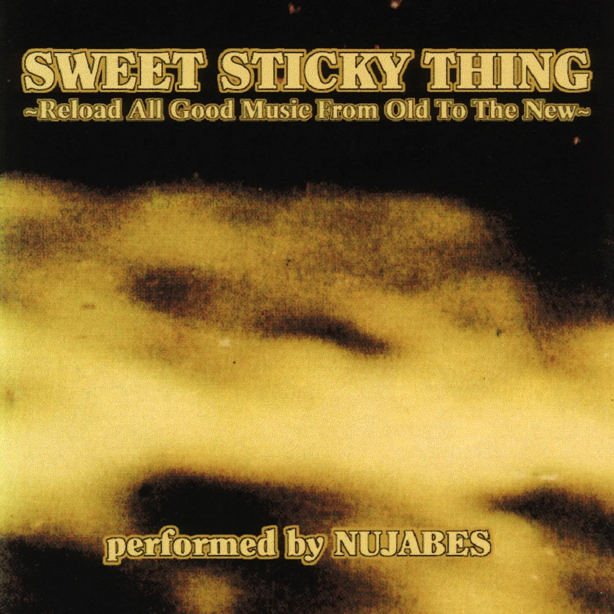

Album#45
Sweet Sticky Thing

专辑信息
- 专辑名称： Sweet Sticky Thing
- 歌手： Nujabes
- 年份： 1998-03-16
- 时长： 約 90 分鐘
給大家分享一張寶藏專輯 ⸺ Nujabes 的 Sweet Sticky Thing ，裡面收集了许多优美的 70~80 年代 R&B 和 Soul 类型的音乐，旋律都很好聴，是一張可以從頭聴到尾也不舍得切歌的專輯，聴著讓人享受、讓人愉悅。
說起 Nujabes 我想不少人可能也聴說過，如果你喜歡看動畫，你大概看過 混沌武士 (如果沒看過，那我強烈推薦一看!)，動畫的配樂很有特色，不少曲子都是 Nujabes 製作的，如片頭曲 Battlecry ，插曲 Aruarian Dance ， Mystline ，這些曲子都很好聴。除了 Nujabes 的曲子，動畫裡的另外兩首曲子 MIDICRONICA 的 san francisco 和 MINMI 的 四季ノ唄 我也很喜歡。
除了混沌武士的配樂，Nujabes 比較广為人知的是他那張 Luv(sic) ，也是我喜歡的一張專輯，我比較喜歡專輯裡的 Luv(sic) 和Luv (sic) pt2 Acoustica (這首後段的薩克斯超好聴)，推薦一聴！
說回 Sweet Sticky Thing ，那時 Nujabes 還沒以 Nujabes 的音樂人身份活跃，他還是一位涩谷的唱片店主。這張混音帯最初僅以錄音帶形式發售，直到多年後才被發現然後上傳到互聯網，從專輯裡可以窺見那些影响了 Nujabes 的音樂。專輯是用磁帯录製黑膠唱片的聲音，Nujabes 也保留了黑胶獨有的那種顆粒感，音色聴起來給人一種温暖的感覺。我找到了三個版本：
-
這版是我最初是在網易雲音樂上聴的版本，這版音源与其說像黑膠，我覺得更像是收音機，聲音模糊不清，忽遠忽近，忽大忽小。虽然聴起來不那麼清晰，但更有一種年代感。
Nujabes - Sweet Sticky Thing (推薦)
reddit 上看到的，這版有黑膠的温暖質感，聲音穏定，我最喜歡。上面那版我原來挺喜歡的，但聴了這版之後回不去了，可能是因為這版的采樣率更高，細節更多吧。
Sweet Sticky Thing (Reloaded & Remixed) | Nujabes
這也是在 reddit 裡發現的，應該是重新处理過，移除了黑膠的那些顆粒感，是聲音最干净的一版。
這張專輯的混音是很自然的，有時你可能都察覺不出切到下一首歌了(有點像情歌串燒，想起了古巨基的 情歌王)。專輯裡的歌曲大多是情歌，旋律非常优美、朗朗上口，歌手的演唱極具張力，歌詞簡單直白、也很動人(如果你要寫情書，這些歌詞都超甜，超浪漫)，不少歌裡都有很精采的間奏，專輯名称 ⸺ Sweet Sticky Thing ⸺ 很準確地詮釋了這張專輯。聴這張專輯我建議是從頭聴到尾，不要切歌，切歌就破壞了專輯的整體感了，說真的，我親愛的讀者，這麼好聴的專輯，你怎麼舍得切歌？
如果你喜歡這張專輯，也許你也喜歡：
- Album#1 - The Miseducation of Lauryn Hill
- Album#6 - Voodoo
- Album#7 - Brown Sugar & Black Messiah
- Album#25 - Live At The Jazz Cafe
- Album#34 - THIS MUSIC MAY CONTAIN HOPE.
- 最後推薦一位歌手 ⸺ 杜麗莎，她的聲音和 Sweet Sticky Thing 裡的許多女聲挺像的，也很好聴。
TRACKLIST
Tracklist
- A Side Intro
- Be Real Black for Me
- Hope That We Can Be Together Soon
- Come to Me
- Angel
- Hurry Down Sunset
- With Your Love I Come Alive
- If You Want Me, Say It
- Phire
- Master of Love
- Sweet Love
- Young, Free and Single
- On a Clear Day
- The Show Is Over
- Happy Song
- Sweet Sticky Thing
- I Suppose
- The Skin You're In
- Say You'll Be
- B Side Intro
- Looking for Your Love
- Dark Side of the Sun
- Ain't Love Funny
- Closest Thing to Heaven
- Separate Ways
- You're Just What I Need
- Elevate Our Mind
- Play My Music
- Just Me and You
- Say It Again
- Stay (Brixton Bass Mix)
- Someday (feat. Carroll Thompson)
- Looking Up to You
- On My Mind
- Tell Me Mama
- Can't Fight the Feeling
- Mine All Mine
- The Good Life

{kind=link}
Be Real Black for Me
By Roberta Flack & Donny Hathaway
[Verse 1: Donny Hathaway]
Our time, short and precious
Your lips, warm and luscious
[Pre-Chorus: Donny Hathaway]
You don't have to wear false charms
'Cause when I wrap you in my hungry arms
[Chorus: Roberta Flack & Donny Hathaway]
Be real Black for me
Be real Black for me
[Verse 2: Roberta Flack]
Your hair, soft and crinkly
Your body, strong and stately
[Pre-Chorus: Roberta Flack]
You don't have to search and roam
'Cause I got your love at home
[Chorus: Roberta Flack & Donny Hathaway]
Be real Black for me
Be real Black for me
[Bridge: Roberta Flack & Donny Hathaway]
In my head, I'm only half together
If I lose you, I'll be ruined forever
Darling, take my hand and hold me
Hold me, hold me, hold me, hold me
[Verse 3: Roberta Flack & Donny Hathaway]
You know how much I need you
To have you, really feel you
[Pre-Chorus: Roberta Flack & Donny Hathaway]
You don't have to change a thing
No one knows the love you bring
[Chorus: Roberta Flack & Donny Hathaway]
Be real Black for me (Woah-oh)
Be real Black for me
[Outro: Roberta Flack & Donny Hathaway]
Be real Black for me
Be real Black for me (I want you to do that)
Be real Black for me (Woah-oh-oh)
Be real Black for me
Be real Black for me
Be real Black for me (Lord, have mercy)
Be real Black for me (Real)
Be real Black for me
歌詞大意
[序言]
我去過很多有趣的地方。
但我從不覺得我有幸造訪過 Poona Flat。
我的名字是 Billy Cross。
如果你們不介意，我們想為各位演奏一段。2
[第一段：Donny Hathaway]
我們的時光，短暫而珍貴
妳的雙唇，溫暖而誘人
[導歌：Donny Hathaway]
妳不必穿戴虛假的裝飾
因為當我用渴望的雙臂擁抱妳時
[副歌：Roberta Flack & Donny Hathaway]
為我展現真實的黑人本色
為我展現真實的黑人本色
[第二段：Roberta Flack]
你的頭髮，柔軟而蜷曲
你的身軀，強壯而挺拔
[導歌：Roberta Flack]
你不需要四處尋覓流浪
因為你的愛就在家裡
[副歌：Roberta Flack & Donny Hathaway]
為我展現真實的黑人本色
為我展現真實的黑人本色
[過門：Roberta Flack & Donny Hathaway]
在我腦海中，我整個人心神不寧
如果失去你，我將永遠毀滅
親愛的，牽起我的手抱緊我
抱緊我，抱緊我，抱緊我，抱緊我
[第三段：Roberta Flack & Donny Hathaway]
妳知道我多麼需要妳
擁有妳，真實地感受妳
[導歌：Roberta Flack & Donny Hathaway]
妳不需要改變任何事情
沒人知道妳帶來的愛
[副歌：Roberta Flack & Donny Hathaway]
為我展現真實的黑人本色 (喔—哦)
為我展現真實的黑人本色
[尾聲：Roberta Flack & Donny Hathaway]
為我展現真實的黑人本色
為我展現真實的黑人本色 (我要你這麼做)
為我展現真實的黑人本色 (喔—哦—哦)
為我展現真實的黑人本色
為我展現真實的黑人本色
為我展現真實的黑人本色 (上主，祈求憐憫)
為我展現真實的黑人本色 (真實的)
為我展現真實的黑人本色
Hope That We Can Be Together Soon
By Harold Melvin and the Blue Notes
When I'm away from you, boy
All I seem to do is cry
And then when I see you, boy
My, how the time does fly
I don't know if you need and love me
The way I love and need you
I hope that we can be together soon
I hope that we can be together soon
I hope that we can be together soon
Real soon, can you make it real soon?
When I think about you, girl
Chills run up and down my spine
And if my wish would come true, girl
I'd be with you all the time
For the right, day and night I'm gonna miss you
All my lonely heart seems to do
I hope that we can be together soon
(Maybe tomorrow)
I hope that we can be together soon
(Maybe tomorrow)
I feel that we can be together soon
But will you make it real soon?
(I can't wait)
Can you make it real soon?
(I can't wait, I can't wait)
I hope that we can be together
I swear I can't wait any longer
Every day my love grows stronger
Ooh, baby, and I, I'd like to make it real soon
歌詞大意
當我不在你身邊時，男孩
我似乎只會不停流淚
而當我見到你時，男孩
天啊，時間過得真快
我不知道你是否也像我愛你、需要你那樣
同樣愛我、需要我
我希望我們能快點在一起
我希望我們能快點在一起
我希望我們能快點在一起
就在不久後，你能讓這一切快點實現嗎？
當我想起你時，女孩
我的脊椎感到一陣陣顫慄
如果我的願望能成真，女孩
我會時刻與你相隨
不分晝夜，我都會想念你
這是我孤寂的心唯一在做的事
我希望我們能快點在一起（或許就在明天）
我希望我們能快點在一起（或許就在明天）
我覺得我們能快點在一起
但你能讓這一切快點實現嗎？（我等不及了）
你能讓這一切快點實現嗎？（我等不及，等不及了）
我希望我們能在一起
我發誓我再也等不下去了
每一天我的愛都變得更強烈
噢，寶貝，我真的很想快點實現這一切
Come to Me
By Thelma Houston
[Intro]
Come to me, why don't you come to me…?
[Verse 1]
This ol' world sure can get to ya
Turn two-faced and fool ya
Make you wanna find a place of truth
Where you can hide
Let me be your shelter, darling
When the sky comes falling
Leaves you over cold outside my door…
[Chorus]
And duck inside, and ooh baby
And come to me to find a love you need
When you are troubled, come to me
And when you've got to feel
That something's for real
I'll be your comfort, if you just come to me
[Verse 2]
Ain't no need to be out fussin'
'Cause that won't get you nothin'
Thinking that you've got to take the weight
Of live alone
Let me take it from your shoulders
Touch, soothe and hold ya
Orphaned child of love, inside my arms
[Chorus]
Come find a home, mm-hm…
And come to me to find a love you need
When you are troubled, come to me
If you're feeling hate
And it's love you wanna make
I'll be your comfort, come to me
[Bridge]
Come to me, baby
Come to me, come to me, baby
Ooh…
[Chorus]
Come to me to find a love you need
When you are troubled, come to me
And if you're feeling hate
And it's love you wanna make
I'll be your comfort, come to me, yeah
[Outro]
Come to me, baby
When you want someone, baby
Come to me, come on!
Come to me, baby
'Cause whatever you need, baby
It's inside of me!
Come on baby, come on baby!
(Come to me, baby) Come to me to find the love you need
When you are troubled, come to me baby
(Come to me, baby) When you're feeling hate
And it's love you wanna make
I'll be your comfort…
歌詞大意
[前奏]
來到我身邊，你為什麼不來到我身邊…？
[主歌 1]
這老舊的世界確實會讓你心煩意亂
變得兩面三刀，把你耍得團團轉
讓你想要找一個真實的地方
躲藏起來
親愛的，讓我成為你的避風港
當天空崩塌
讓你孤身一人在我的門外受凍…
[副歌]
快躲進來，喔 寶貝
來到我身邊，尋找你需要的愛
當你煩惱時，來到我身邊
當你想要感受到
某些真實的東西時
我會成為你的慰藉，只要你來到我身邊
[主歌 2]
沒必要在外面瞎折騰
因為那什麼也得不到
別以為你必須獨自承擔
生活的重擔
讓我從你肩上接過它
觸摸、安撫並擁抱你
愛中孤苦的孩子，來到我懷裡
[副歌]
來找個家吧，嗯…
來到我身邊，尋找你需要的愛
當你煩惱時，來到我身邊
如果你感到仇恨
而你想要的是愛
我會成為你的慰藉，來到我身邊
[過渡]
來到我身邊，寶貝
來到我身邊，來到我身邊，寶貝
喔…
[副歌]
來到我身邊，尋找你需要的愛
當你煩惱時，來到我身邊
如果你感到仇恨
而你想要的是愛
我會成為你的慰藉，來到我身邊，耶
[尾聲]
來到我身邊，寶貝
當你想要有人陪伴時，寶貝
來到我身邊，快來！
來到我身邊，寶貝
因為無論你需要什麼，寶貝
都在我心裡！
快來吧寶貝，快來吧寶貝！
（來到我身邊，寶貝）來到我身邊，尋找你需要的愛
當你煩惱時，來到我身邊，寶貝
（來到我身邊，寶貝）如果你感到仇恨
而你想要的是愛
我會成為你的慰藉…
Angel
[Intro]
Angel, mmm, ooh
Angel, mmm, hmm
Angel, mmm, ooh, ooh, ooh
Angel, yeah (Oh, oh)
Mmm, ba doo doo ba doo
Doo, ba, doo, doo
Doo, ooh (Angel)
[Verse 1]
I found a certain paradise
Within my life with you
Heaven opened up its gates
And peace of mind came shining through
[Pre-Chorus]
You smiled at me
When the world was unkind
I was finally able to unwind
I found an angel, yeah
An angel
[Chorus]
I found an angel (Angel)
You're an angel in my eyes (Angel)
I found an angel (Angel)
You're an angel in my eyes, yeah (Angel)
[Verse 2]
The sun can rise and set with no regrets
I can forget all about my blues
My life can take direction now
And my mind a clearer point of view
[Pre-Chorus]
You know you lift me up when I'm torn down
You brought me out of this lost and found
I found an angel, yeah
An angel
[Chorus]
I found my-my-my-my-my angel (Angel)
You're an angel in my eyes (Angel)
I found my angel (Angel)
An angel in my eyes, yeah (Angel)
[Bridge]
Angel
Ooh
Angel
Don't you know
Angel
Ooh
Angel, yeah
Yeah, ooh
(Angel, angel, angel, angel)
All I want, all I need
You gave me back my dignity
Angel (I found an angel)
You're all I want, all I need
You gave me back my dignity
Angel, hoo (Angel)
My angel
You're all I want, all I need
You gave me back my dignity
My angel, yeah (Angel)
Oh
You're all I want, all I need
You gave me back my dignity
My life can take direction now
My mind a clearer point of view
It's all because my baby (Angel)
All because of you now, darlin'
[Outro]
Angel
Angel
Ooh, ooh, ooh, ooh, yeah
My, my, my, my, my, my
My angel
Oh, oh (I found an angel)
Ooh, ooh
歌詞大意
[前奏]
天使，嗯，哦
天使，嗯，哼
天使，嗯，哦，哦，哦
天使，耶（哦，哦）
嗯，吧 嘟 嘟 吧 嘟
嘟，吧，嘟，嘟
嘟，哦（天使）
[主歌 1]
我找到了某種天堂
在與你共度的生命中
上天敞開了它的大門
心靈的平靜隨之閃耀而入
[導歌]
當世界冷酷無情時
你對我微笑
我終於能夠放鬆身心
我找到了一位天使，耶
一位天使
[副歌]
我找到了一位天使（天使）
在我眼中你就是天使（天使）
我找到了一位天使（天使）
在我眼中你就是天使，耶（天使）
[主歌 2]
太陽升起又落下，毫無遺憾
我可以忘掉所有的憂鬱
我的生命現在有了方向
我的思緒有了更清晰的觀點
[導歌]
你知道當我失落沮喪時，是你拉了我一把
你將我從這迷失與尋回中帶了出來
我找到了一位天使，耶
一位天使
[副歌]
我找到了我、我、我、我的天使（天使）
在我眼中你就是天使（天使）
我找到了我的天使（天使）
我眼中的一位天使，耶（天使）
[橋段]
天使
哦
天使
難道你不知道嗎
天使
哦
天使，耶
耶，哦
（天使，天使，天使，天使）
我所想、我所求
你找回了我的尊嚴
天使（我找到了一位天使）
你是我所想、我所求
你找回了我的尊嚴
天使，呼（天使）
我的天使
你是我所想、我所求
你找回了我的尊嚴
我的天使，耶（天使）
哦
你是我所想、我所求
你找回了我的尊嚴
我的生命現在有了方向
我的思緒有了更清晰的觀點
這全是因為我的寶貝（天使）
親愛的，全是因為你
[尾聲]
天使
天使
哦，哦，哦，哦，耶
我的，我的，我的，我的，我的，我的
我的天使
哦，哦（我找到了一位天使）
哦，哦
By Angela Winbush
By Angela Winbush
Hurry Down Sunset
By Chocolate Milk
[Verse 1]
Come tomorrow
I'll be leaving you
Packed up my bags
I’m tired of being deceived by you
Starlight, star bright
You're the first star that I see tonight
You light up my way, what else can I say
But love lead me on my way
[Chorus 1]
To the hurry down, sunset
I'm looking for a brighter day
Come on up, sunshine
I need you here to light my way
Brighten up, night skies
Lead me to tomorrow
Come on up my way
Ease up all my sorrows
[Refrain]
Hurry down, sunset
Hurry down, sunset
[Verse 2]
Winds of change are blowing
I can see the leaves are dancing
Tomorrow I’ll be going, no use in you knowing
There's no use in you trying
My hands already flying, like a glider plane
Stop your eyes from crying
Lies were made for dying
Nothing ever stays the same
[Chorus 2]
Hurry down, sunset
You will lead for another day
Promise me a sunshine
Find the road with a lighter weight
Yesterday's promises
Collecting on my over-dues
Coming up, the morning star
Promises good news
Good news!
[Refrain]
Hurry down, sunset!
Hurry down, sunset!
Hurry down, sunset!
Hurry down, sunset!
[Outro]
Ooh-ooh-ooh-ooh-ooh
Yeah, yeahh
Hurry, hurry, hurry down, sunset
I need… I need…
You to beam up to a brighter day
Hurry down, sunset
Ahh! Ooh-ooh-ooh-ooh-ahh, yeah
Hurry, hurry
Hurry, hurry down
歌詞大意
[Verse 1]
到了明天
我就要離開你
收拾好行囊
我已厭倦被你欺騙
星光閃爍，星光燦爛
你是我今晚看見的第一顆星
你照亮了我的路，我還能說什麼
唯有愛引領我前行
[Chorus 1]
奔向那匆匆落下的夕陽
我在尋找更明亮的一天
升起吧，陽光
我需要你在這裡照亮我的路
點亮吧，夜空
引領我走向明天
來到我的路途上
撫平我所有的憂傷
[Refrain]
快落下吧，夕陽
快落下吧，夕陽
[Verse 2]
變革之風正在吹拂
我看見落葉在起舞
明天我就要離去，沒必要讓你知道
你再努力也沒用
我的雙手已在飛翔，像一架滑翔機
別再流淚了
謊言註定要消亡
世事無常
[Chorus 2]
快落下吧，夕陽
你會引領新的一天
許我一個晴天
找到那負擔更輕的路
昨日的諾言
正催討著我的欠帳
晨星即將升起
預示著好消息
好消息！
[Refrain]
快落下吧，夕陽！
快落下吧，夕陽！
快落下吧，夕陽！
快落下吧，夕陽！
[Outro]
喔—喔—喔—喔—喔
耶，耶
快點，快點，快落下吧，夕陽
我需要……我需要……
你照耀出更明亮的一天
快落下吧，夕陽
啊！喔—喔—喔—喔—啊，耶
快點，快點
快點，快落下吧
With Your Love I Come Alive
By Atlantic Starr
[Intro]
Ooh, yeah
Ooh, yeah
Da-da-da
Doo-be-doo, Oh
Da-be-da
Doo-be-doo
Ooh (Oh)
[Verse 1]
I can't hide
Or deny the love I feel for you inside
Where there's a will there is a way
I got to get to you somehow
And open up your eye (Doo-doo, doo, doo-doo, oh)
No need to run
Now face-to-face with love, life has begun
We spend the night, we'll share that special
Land to me and you
Just the sky and bring the sun
[Pre-Chorus]
My face will show
(Face will show)
Our love's afterglow
See Atlantic Starr Live
Get tickets as low as $107
[Chorus]
Ooh, baby with your love I come alive (Baby, with your lovе I come alive)
Ooh, you lift me up and you makе me feel so high (You lift me up and keep me really high)
Woah (With your love)
With your love (With your love)
I come alive (I come alive)
Said I come alive (I come alive)
Baby (Do-do-do-do-do, oh)
[Verse 2]
Don't hesitate
It's you I need, and love
Won't let me wait
Now something tells me deep within
We should really take the chance
And tempt the hand of fate (Do-do-do-do-do, oh)
It's plain to see
You alone bring out the best in me, ooh yeah
Desire builds as feelings grow
Together, we will shine the light
For all eternity (For all eternity)
[Pre-Chorus]
Stay as you are (Stay as you are)
Oh, for it's you
You inspire
Me with your love
[Chorus]
Oh, baby with, ooh, with your love I come alive, yeah (With your love I come alive)
You lift me up and you make me feel so high (You lift me up and make me really high)
Woah, with your love (Oh baby with your love, with your love)
I come alive (I come alive)
Baby I, I, I come alive 'til I come alive (I come alive, do-do, do, doo-doo, oh)
[Outro]
What can I say?
What can I do?
Just to make you see
Just, just, just, just what you mean to me, baby, yeah
You love
And love
It brings me up, babe, you bring me down, babe (Doo-be-do, doo-be-do, oh)
You make me, you make me, you make me, you make me feel so high, girl (Doo-be-do, doo-be-do, oh)
I'm so proud to say (Doo-be-do, doo-be-do, oh)
That I'm in love (Doo-be-do, doo-be-do, oh)
With you, I guess I'm wanting to live forever, da-da-da-da-damn (Doo-be-do, doo-be-do, oh)
Oh yeah, oh haw, oh yeah (Doo-be-do, doo-be-do, oh)
You make me feel so high, so high, so high (Doo-be-do, doo-be-do, oh)
歌詞大意
[前奏]
喔，耶
喔，耶
噠-噠-噠
嘟-比-嘟，喔
噠-比-噠
嘟-比-嘟
喔 (喔)
[第一段]
我無法隱藏
也無法否認內心對你的愛
有志者事竟成
我一定要想辦法接近你
讓你睜開雙眼 (嘟-嘟，嘟，嘟-嘟，喔)
不需要逃避
現在與愛面對面，生命已經開啟
我們共度良宵，分享那片專屬
你我的土地
只有天空，迎向陽光
[前副歌]
我的臉龐會顯露
(臉龐會顯露)
我們愛的餘暉
觀看 Atlantic Starr 現場演出
門票低至 107 美元
[副歌]
喔，寶貝，有了你的愛我充滿活力 (寶貝，有了你的愛我充滿活力)
喔，你將我舉起，讓我感覺如此飄然 (你將我舉起，讓我飛得好高)
喔 (有了你的愛)
有了你的愛 (有了你的愛)
我充滿活力 (我充滿活力)
我說我充滿活力 (我充滿活力)
寶貝 (嘟-嘟-嘟-嘟-嘟，喔)
[第二段]
不要猶豫
我需要的就是你，而愛
不容我等待
現在內心深處有個聲音告訴我
我們真的應該把握機會
去挑戰命運之手 (嘟-嘟-嘟-嘟-嘟，喔)
顯而易見
唯有你激發出我最好的一面，喔耶
渴望隨著感覺增長而建立
我們將一起閃耀光芒
直到永恆 (直到永恆)
[前副歌]
保持原樣 (保持原樣)
喔，因為就是你
你啟發了
帶著愛的我
[副歌]
喔，寶貝，有了，喔，有了你的愛我充滿活力，耶 (有了你的愛我充滿活力)
你將我舉起，讓我感覺如此飄然 (你將我舉起，讓我飛得好高)
喔，有了你的愛 (喔寶貝有了你的愛，有了你的愛)
我充滿活力 (我充滿活力)
寶貝我，我，我充滿活力，直到我充滿活力 (我充滿活力，嘟-嘟，嘟，嘟-嘟，喔)
[尾聲]
我還能說什麼？
我還能做什麼？
只想讓你明白
只想讓你明白你對我有多重要，寶貝，耶
你的愛
還有愛
它讓我興奮，寶貝，也讓我沉醉，寶貝 (嘟-比-嘟，嘟-比-嘟，喔)
你讓我，你讓我，你讓我，你讓我感覺如此飄然，女孩 (嘟-比-嘟，嘟-比-嘟，喔)
我很自豪地說 (嘟-比-嘟，嘟-比-嘟，喔)
我戀愛了 (嘟-比-嘟，嘟-比-嘟，喔)
有了你，我想我想活到永遠，他媽的 (嘟-比-嘟，嘟-比-嘟，喔)
喔耶，喔吼，喔耶 (嘟-比-嘟，嘟-比-嘟，喔)
你讓我感覺如此飄然，如此飄然，如此飄然 (嘟-比-嘟，嘟-比-嘟，喔)
If You Want Me, Say It
By Love Unlimited
Don't waste time, don't delay it
If you want me, say it
Don't waste time, don't delay it
Love is in your eyes every time you look at me
No, you can't disguise it, I can clearly see
You want to dance with me all night long
Now you're tying to find a way to say, "Can I take you home"?
If you want me, say it
Don't waste time, don't delay it
If you want me, say it
Don't be shy, don't delay it
If you want me, say it
Don't waste time, don't delay it
It's hard to say you wanna play but that's okay
Yes, I will stay with you for a little while
If you want me say it
Don't waste time, don't delay it
I'm not any different than any other girl
I'm trying to find love too in this big world
Don't think of me as an easy score
'Cause no one has ever made me feel this way before
A woman can lay with any man she wants
It's really up to her whether she do or don't
So if you want me, say it
Don't waste time, don't delay it
If you want me, say it
Don't be shy, don't delay it
If you want me, say it
Don't waste time, don't delay it
It's hard to say you wanna play but that's okay
Yes, I will stay with you for a little while
If you want me, say it
Don't waste time, don't delay it
If you want me, say it
Don't be shy, don't delay it
If you want me, say it
Don't waste time, don't delay it
If you want me
Yes, I will stay with you for a little while
If you want me, say it
Don't waste time, don't delay it
If you want me, say it
Don't waste time, don't delay it
If you want me, say it
Don't waste time, don't delay it
If you want me, say it
Don't waste time, don't delay it
歌詞大意
如果你想要我，就說出來
別浪費時間，別再拖延
如果你想要我，就說出來
別浪費時間，別再拖延
每次你看着我，眼裡都充滿愛意
不，你掩飾不了，我看得清清楚楚
你想整晚和我跳舞
現在你正試著找藉口說：「我能帶你回家嗎？」
如果你想要我，就說出來
別浪費時間，別再拖延
如果你想要我，就說出來
別害羞，別再拖延
如果你想要我，就說出來
別浪費時間，別再拖延
想說你想玩玩是很難開口，但沒關係
是的，我會陪你待一會兒
如果你想要我，就說出來
別浪費時間，別再拖延
我跟其他女孩沒什麼不同
我也在這個大世界裡尋找真愛
別把我想成是可以輕易得手的目標
因為從來沒有人讓我像現在這樣心動
女人可以和任何她想要的男人上床
做與不做，全由她自己決定
所以如果你想要我，就說出來
別浪費時間，別再拖延
如果你想要我，就說出來
別害羞，別再拖延
如果你想要我，就說出來
別浪費時間，別再拖延
想說你想玩玩是很難開口，但沒關係
是的，我會陪你待一會兒
如果你想要我，就說出來
別浪費時間，別再拖延
如果你想要我，就說出來
別害羞，別再拖延
如果你想要我，就說出來
別浪費時間，別再拖延
如果你想要我
是的，我會陪你待一會兒
如果你想要我，就說出來
別浪費時間，別再拖延
如果你想要我，就說出來
別浪費時間，別再拖延
如果你想要我，就說出來
別浪費時間，別再拖延
如果你想要我，就說出來
別浪費時間，別再拖延
Phire
By Charles Earland
[Verse 1]
When I first saw you, girl, you changed my life
Child, you gave me strength through our time of strife, yeah
For all the seasons too tall, my love will stand
For all the reasons, one day, you'll understand
Sun-child, light of God
I want you to know
Do anything you want to
Go where you want to go
Rainbows, pots of gold
Your love is to me
Yeah, shine your light, the brightest star in the biggest galaxy
[Chorus]
Oh, Phire (My heart's desire)
Yeah, a higher, a higher
I think I would love ya high
(Phire, my heart's desire)
(Phire, Phire)
Blow your horn, brother
[Instrumental Break]
[Verse 2]
When I first saw you, girl, you changed my life
Child, you gave me strength through our time of strife, yeah
For all the seasons too tall, my love will stand
For all the reasons, one day, you'll understand
[Chorus]
Phire (My heart's desire)
Girl, I love ya, I love ya
I think I would love ya, yeah
(Phire, my heart's desire)
(Phire, Phire) High
Yeah
[Instrumental Outro]
歌詞大意
[第一節]
當我第一次見到妳，女孩，妳改變了我的生命
孩子，在我們艱難的時刻，妳給了我力量，耶
歷經所有漫長的季節，我的愛將屹立不搖
為了所有的理由，總有一天，妳會明白
太陽之子，上帝之光
我想讓妳知道
做任何妳想做的事
去任何妳想去的地方
彩虹，滿罐的黃金
妳的愛對我而言就是如此
耶，閃耀妳的光芒，浩瀚銀河中最明亮的星
[副歌]
噢，Phire（我心中的渴望）
耶，更高，更高
我想我會深深愛著妳
（Phire，我心中的渴望）
（Phire，Phire）
吹響你的號角，兄弟
[樂器間奏]
[第二節]
當我第一次見到妳，女孩，妳改變了我的生命
孩子，在我們艱難的時刻，妳給了我力量，耶
歷經所有漫長的季節，我的愛將屹立不搖
為了所有的理由，總有一天，妳會明白
[副歌]
Phire（我心中的渴望）
女孩，我愛妳，我愛妳
我想我會愛著妳，耶
（Phire，我心中的渴望）
（Phire，Phire）高飛
耶
[樂器尾奏]
Master of Love
By Freda Payne
我沒找到歌詞，如果你有歌詞，或能聴出完整歌詞，請帮我完成它，謝謝!
[Intro]
No better time than this one (?)
[???]
I need you now
So make love to me
[???]
Give it to me
[???]
Come make love to me
[Verse 1]
Half of the time I'm just daydreaming
All of the time, my love is streaming
[hug for you???]
Cause you're the master of love
(You're the master of love)
[Chorus]
No better time than this one(?)
[???]
I need you now
So make love to me
[???]
give it to me
[???]
Come make love to me
I need you now
[???]
I want to be yours
[???]
(You're the master of)
[Outro]
I know you are
You know you are
Sweet Love
By Anita Baker
[Verse 1]
With all my heart, I love you, baby
Stay with me, and you will see
My arms will hold you, baby
Never leave 'cause I believe
[Chorus]
I'm in love, sweet love
Hear me calling out your name — I feel no shame
I'm in love, sweet love
Don't you ever go away, it'll always be this way
[Verse 2]
Your heart has called me closer to you
I will be all that you need
Just trust in what we're feelin'
Never leave 'cause, baby, I believe
[Chorus]
In this love, sweet love
Hear me callin' out your name — I feel no shame
I'm in love, sweet love
Don't you ever go away, it'll always be this way
[Bridge]
There's no stronger love in this world — oh, baby, no
You're my man, I'm your girl — I'll never go
Wait and see, can't be wrong
Don't you know this is where you belong?
[Verse 3]
Oh, the sweetest dream, a lovely baby
Stay right here, never fear
I will be all that you need
Never leave 'cause, baby, I believe
[Chorus]
In this love, sweet love
Hear me calling out your name — I feel no shame
I'm in love, sweet love
Don't you ever go away, it'll always be this way
[Outro]
(Sweet love)
Oh, no, no, no, no, no, no, no
(Sweet love) Oh no, no
(Ooh) Uh-huh, huh, huh
(With all my heart, I love you) So sweet, so sweet
(Ooh) So sweet, oh, oh, love
(Sweet love) Your love
Oh, baby, no sweeter love
(Sweet love) Oh, sweeter love
Oh, no, no, no, no-no, no, no, no
(Sweet love) Don't nobody know
Don't nobody know how sweet it is
Ah, how sweet it is
(Sweet love) Love me sweetly, baby
Just leave me sweetly, baby
(Sweet love)
Don't nobody know
(Sweet love)
歌詞大意
[主歌 1]
全心全意，我愛你，寶貝
留在我身邊，你就會明白
我的雙臂會擁抱你，寶貝
永遠別離開，因為我相信
[副歌]
我墜入愛河，甜蜜的愛
聽我呼喚你的名字——我毫不羞愧
我墜入愛河，甜蜜的愛
你千萬別走開，這份愛將永遠不變
[主歌 2]
你的心將我拉近你
我會成為你所需的一切
只要相信我們的感受
永遠別離開，因為，寶貝，我相信
[副歌]
在這份愛中，甜蜜的愛
聽我呼喚你的名字——我毫不羞愧
我墜入愛河，甜蜜的愛
你千萬別走開，這份愛將永遠不變
[橋段]
世上沒有比這更強烈的愛——噢，寶貝，沒有
你是我的男人，我是你的女孩——我永遠不會走
等著看吧，這不會有錯
難道你不知道這就是你的歸屬？
[主歌 3]
噢，最甜美的夢，可愛的寶貝
就留在這裡，永遠別害怕
我會成為你所需的一切
永遠別離開，因為，寶貝，我相信
[副歌]
在這份愛中，甜蜜的愛
聽我呼喚你的名字——我毫不羞愧
我墜入愛河，甜蜜的愛
你千萬別走開，這份愛將永遠不變
[尾奏]
(甜蜜的愛)
噢，不，不，不，不，不，不，不
(甜蜜的愛) 噢，不，不
(喔) 嗯哼，哼，哼
(全心全意，我愛你) 如此甜蜜，如此甜蜜
(喔) 如此甜蜜，噢，噢，愛
(甜蜜的愛) 你的愛
噢，寶貝，沒有更甜蜜的愛
(甜蜜的愛) 噢，更甜蜜的愛
噢，不，不，不，不-不，不，不，不
(甜蜜的愛) 沒有人知道
沒有人知道這有多甜蜜
啊，這有多甜蜜
(甜蜜的愛) 甜蜜地愛我吧，寶貝
就甜蜜地離開我吧，寶貝
(甜蜜的愛)
沒有人知道
(甜蜜的愛)
Young, Free and Single
By SunFire
[Verse 1]
If you're doing nothing this weekend
Give me a call
'Cause if we can hook up, baby
Please let me know
[Chorus]
Well, I'm young, free and single
I just want to mingle with you, lady
Well, I'm young, free and single
I just want to mingle with you, girl
[Verse 2]
I know when I see you, baby
No ifs, ands, buts or maybes
It'd be me and you, yeah, yeah, yeah
So won't you take me by my hand
And let me be your man?
Ooh, feels so good having you around
[Chorus]
Well, I'm young, free and single
I just want to mingle with you, lady
Well, I'm young, free and single
I just want to mingle with you, girl
[Bridge]
I don't know where you've come from
I don't know where you've been, no
All I know is I want your love
So let my lovin' in
[Chorus]
Well, I'm young, free and single
I just want to mingle with you, lady
Well, I'm young, free and single
I just want to mingle with you, girl
Well, I'm young, free and single
I just want to mingle with you, lady
Well, I'm young, free and single
I just want to mingle with you, girl
[Bridge]
I don't know where you've come from
I don't know where you've been, no
All I know is I want your love
So let my lovin' in
[Chorus]
Well, I'm young, free and single
I just want to mingle with you, lady
Well, I'm young, free and single
I just want to mingle with you, girl
[Outro]
So won't you stand by my side
And let me be your guide, ooh, girl
Over and over again
Let me take you by your hand
And let me be your man
Ooh, I wanna love ya
Ooh, I can love ya baby
Let me love ya
Let me hold ya, girl
Say you mean the world to me
You can make a blind man see
歌詞大意
[主歌 1]
如果這個週末妳沒事做
給我打個電話
因為如果我們能聚一聚，寶貝
請讓我知道
[副歌]
嗯，我年輕、自由且單身
我只想與妳相伴，小姐
嗯，我年輕、自由且單身
我只想與妳相伴，女孩
[主歌 2]
我知道當我見到妳時，寶貝
沒有任何藉口或猶豫
就會是我和妳，耶，耶，耶
所以妳願意牽起我的手
讓我做妳的男人嗎？
喔，有妳在身邊感覺真好
[副歌]
嗯，我年輕、自由且單身
我只想與妳相伴，小姐
嗯，我年輕、自由且單身
我只想與妳相伴，女孩
[橋段]
我不知道妳從哪裡來
我不知道妳去過哪裡，不
我只知道我想要妳的愛
所以接納我的愛吧
[副歌]
嗯，我年輕、自由且單身
我只想與妳相伴，小姐
嗯，我年輕、自由且單身
我只想與妳相伴，女孩
嗯，我年輕、自由且單身
我只想與妳相伴，小姐
嗯，我年輕、自由且單身
我只想與妳相伴，女孩
[橋段]
我不知道妳從哪裡來
我不知道妳去過哪裡，不
我只知道我想要妳的愛
所以接納我的愛吧
[副歌]
嗯，我年輕、自由且單身
我只想與妳相伴，小姐
嗯，我年輕、自由且單身
我只想與妳相伴，女孩
[尾奏]
所以妳願意站在我身邊
讓我做妳的嚮導嗎，喔，女孩
一次又一次
讓我牽起妳的手
讓我做妳的男人
喔，我想要愛妳
喔，我能愛妳，寶貝
讓我愛妳
讓我抱緊妳，女孩
說妳對我來說就是全世界
妳能讓盲人重見光明
On a Clear Day
By The Peddlers
[Verse]
On a clear day
Rise and look around you
And you will see who
You are
On a clear day
How it will astound you
That the glow of your being
Outshines every star
[Chorus]
You'll feel part of every mountain
Sea and shore
And you can hear
From far and near
A world you've never heard before
But on that clear day
On that clear day
You can see forever
And ever
Ever more
[Organ Solo]
[Chorus]
You'll feel part of every mountain
Sea or shore
And you can hear
From far and near
A world you've never heard before
On that clear day
Oh, on that clear day
You can see forever
And ever
Ever more
歌詞大意
[主歌]
在一個晴朗的日子裡
起身環顧四周
你就會看清
你是誰
在一個晴朗的日子裡
這將多麼令你驚嘆
你存在的光輝
比所有星辰更耀眼
[副歌]
你會感覺自己是每座高山的一部分
汪洋與海岸
你能聽見
從遠近各處傳來
一個你從未聽過的世界
但在那晴朗的日子裡
在那晴朗的日子裡
你能看見永恆
直到永遠
永永遠遠
[風琴獨奏]
[副歌]
你會感覺自己是每座高山的一部分
汪洋或海岸
你能聽見
從遠近各處傳來
一個你從未聽過的世界
在那晴朗的日子裡
噢，在那晴朗的日子裡
你能看見永恆
直到永遠
永永遠遠
The Show Is Over
By Evelyn King
Yesterday I was your lover
I had your love all to my own
You came to me when I needed you
Gave me love when I was alone
Ooh baby, I'm sorry
But you know I got to leave from here
Ain't no two ways about it
Maybe I'll see you this time next year
Woh, oh, oh, oh
The show is over
Baby, I won't be around
The show is over
Tomorrow I'm leaving the town
Don't cry, don't cry
You're sad 'cause I'm going away
Just think about the love we had
'Cause you know I just can't stay
Ooh, baby, I'm sorry
But you know I got to leave from here
Ain't no two ways about it
Maybe I'll see you this time next year
Woh, oh, oh, oh
The show is over
Baby, I won't be around
The show is over
Tomorrow I'm leaving the town
[Instrumental Break]
Ooh, baby, I'm sorry
But you know I got to leave from here
Ain't no two ways about it
Maybe I'll see you this time next year
Woh, oh, oh, oh
The show is over
Baby, I won't be around
The show is over
Tomorrow I'm leaving the town
[Instrumental Break]
Listen to me, baby
Wish we could work it out
I've got to leave
I've got to leave
[Instrumental Break Until Fade Out]
歌詞大意
昨天我還是你的情人…
我獨佔了你的愛…
在我需要你的時候，你來到了我身邊…
在我孤單時給了我愛…
噢，寶貝，對不起…
但你知道我必須離開這裡…
沒有別的辦法…
也許明年的這個時候我會再見到你…
喔，喔，喔，喔…
戲已落幕…
寶貝，我不會在身邊了…
戲已落幕…
明天我就要離開這座城市…
別哭，別哭…
你因為我要離開而傷心…
只要想想我們曾擁有的愛…
因為你知道我真的不能留下…
噢，寶貝，對不起…
但你知道我必須離開這裡…
沒有別的辦法…
也許明年的這個時候我會再見到你…
喔，喔，喔，喔…
戲已落幕…
寶貝，我不會在身邊了…
戲已落幕…
明天我就要離開這座城市…
[樂器間奏]
噢，寶貝，對不起…
但你知道我必須離開這裡…
沒有別的辦法…
也許明年的這個時候我會再見到你…
喔，喔，喔，喔…
戲已落幕…
寶貝，我不會在身邊了…
戲已落幕…
明天我就要離開這座城市…
[樂器間奏]
聽我說，寶貝…
真希望我們能解決這一切…
我必須離開…
我必須離開…
[樂器間奏直到淡出]
Happy Song
By Blackstreet
[Chorus]
Tonight
Gotta take these records off the shelf
Play something special for yourself
It's over now
Gotta leave your troubles far behind
Or just enough to ease your mind
'Cause only time can decide
Baby, you'll be alright this time (Oh, oh, oh-oh, I, oh, I)
This time (Oh, oh, oh-oh, I, oh, I)
[Verse 1: Mark]
Say my name when you feel the pain
I'll be there to shelter when it's pouring rain
If I can do anything, girl, you know I'll try
Times are rough, you feel you're going nowhere
Your sadness hurts so bad and there's no one to care
The sun shines after the rain, girl, I know
[Pre-Chorus: Mark]
'Cause I been there before in this world all alone
And you been there for me, and you gave me your all
I've been there before, you'll come around
And you'll be alright, 'cause this is your time, so
[Chorus]
Tonight
Gotta take these records off the shelf
Play something special for yourself
It's over now
Gotta leave your troubles far behind
Or just enough to ease your mind
'Cause only time can decide
Baby, you'll be alright this time (Oh, oh, oh-oh, I, oh, I)
This time (Oh, oh, oh-oh, I, oh, I)
[Verse 2: Mark]
Just when you think love's about to end
That's when you find a new beginning, it's a part of life
You wonder why you go all through a change
Why it seemed like things never go your way
Girl, I know how it feels to be alone
[Pre-Chorus: Mark]
'Cause I been there before at the bottom alone
I know the way to reach the top, you got to let go
I've been insecure, you'll come around
And you'll be alright, 'cause this is your time, so
[Chorus]
Tonight
Gotta take these records off the shelf
Play something special for yourself
It's over now
Gotta leave your troubles far behind
Or just enough to ease your mind
'Cause only time (Time), can decide (Can decide)
Baby, you'll be alright this time
(Yeah, yeah)
Oh, tonight
Gotta take these records off the shelf
Play something special for yourself
It's over now
Gotta leave your troubles far behind
Or just enough to ease your mind
Oh, tonight
Gotta take these records off the shelf
Play something special for yourself
It's over now
Gotta leave your troubles far behind
Or just enough to ease your mind
[Interlude]
Oh, tonight
Gotta take these records off the shelf
Here's something special for yourself
Oh, tonight
Troubles are far behind
Let me ease your mind
[Chorus]
Oh, tonight
Gotta take these records off the shelf
Play something special for yourself
It's over now
Gotta leave your troubles far behind
Or just enough to ease your mind
歌詞大意
[副歌]
今晚
得把這些唱片從架上拿下
為自己播放些特別的旋律
現在都結束了
得把煩惱遠遠拋在腦後
或者至少讓你的心平靜下來
因為只有時間能決定
寶貝，這次你會沒事的 (Oh, oh, oh-oh, I, oh, I)
這一次 (Oh, oh, oh-oh, I, oh, I)
[主歌 1: Mark]
當你感到痛苦時，呼喚我的名字
傾盆大雨時，我會在那裡為你遮風擋雨
如果我能做什麼，女孩，你知道我會去嘗試
時局艱難，你覺得自己停滯不前
你的悲傷如此刺痛，卻無人關心
雨後總會天晴，女孩，我知道的
[導歌: Mark]
因為我曾經歷過，獨自一人在這個世界上
而你曾陪著我，給了我你的全部
我曾經歷過，你會好轉的
你會沒事的，因為這是屬於你的時間，所以
[副歌]
今晚
得把這些唱片從架上拿下
為自己播放些特別的旋律
現在都結束了
得把煩惱遠遠拋在腦後
或者至少讓你的心平靜下來
因為只有時間能決定
寶貝，這次你會沒事的 (Oh, oh, oh-oh, I, oh, I)
這一次 (Oh, oh, oh-oh, I, oh, I)
[主歌 2: Mark]
就在你以為愛即將結束時
那正是你發現新開始的時候，這是生活的一部分
你想知道為什麼你要經歷這一切改變
為什麼事情似乎總是不如你意
女孩，我知道孤獨的感覺
[導歌: Mark]
因為我曾經歷過，獨自一人在谷底
我知道到達頂峰的方法，你必須學會放手
我曾缺乏安全感，你會好轉的
你會沒事的，因為這是屬於你的時間，所以
[副歌]
今晚
得把這些唱片從架上拿下
為自己播放些特別的旋律
現在都結束了
得把煩惱遠遠拋在腦後
或者至少讓你的心平靜下來
因為只有時間 (時間)，能決定 (能決定)
寶貝，這次你會沒事的
(Yeah, yeah)
噢，今晚
得把這些唱片從架上拿下
為自己播放些特別的旋律
現在都結束了
得把煩惱遠遠拋在腦後
或者至少讓你的心平靜下來
噢，今晚
得把這些唱片從架上拿下
為自己播放些特別的旋律
現在都結束了
得把煩惱遠遠拋在腦後
或者至少讓你的心平靜下來
[間奏]
噢，今晚
得把這些唱片從架上拿下
這裡有些為你準備的特別旋律
噢，今晚
煩惱已遠遠拋在腦後
讓我撫平你的心緒
[副歌]
噢，今晚
得把這些唱片從架上拿下
為自己播放些特別的旋律
現在都結束了
得把煩惱遠遠拋在腦後
或者至少讓你的心平靜下來
Sweet Sticky Thing
By Ohio Players
[Spoken Intro]
- Hey, looka there
- Where, man?
- Over there
- Wow
(whistles)
- Man, that's such a sweet thing, shucks, mmm, mmm, mmm
[Verse 1]
You just go from man to man
I just don’t seem to understand
Why you’re so very hard to take
You sweet sticky thing
If I could slow you down sometime
I’d like to try and change your mind
You’re really not the one to blame
You sweet sticky thing
[Chorus]
Sweet, sweet sticky thing
Sweet, sweet sticky thing
Sweet, sweet sticky thing
Sweet, sweet sticky thing
Sweet, sweet sticky thing
Sweet, sweet sticky thing
[Verse 2]
Every time that you walk by
You really leave me paralyzed
If you just wouldn't play those games
You sweet sticky thing
Your beehive is full of bees
I wish you had a place for me
I’m really trying hard to change
You sweet sticky thing
[Chorus]
Sweet, sweet sticky thing
Sweet, sweet sticky thing
Sweet, sweet sticky thing
Sweet, sweet sticky thing
Sweet, sweet sticky thing
Sweet, sweet sticky thing
[Verse 3]
Little buzzin' bumble bee
I’d want to take you home with me
Will you share my beehive with me
You sweet sticky thing
You leave honey everywhere
Sometimes I wonder if you care
Who sees you when you do your thing
You’ve got such a sting
[Outro]
Sweet, sweet sticky thing
Sweet, sweet sticky thing
That’s why I sing
Da da da daa
Da da da daa
Da da da daa aah
Da da da daa
Da da da daa
Da da da daa aah
Da da da daa
Da da da daa
Da dat da daa aah
Da da da daa
Da da da daa
Da da da daa ya
歌詞大意
[口白]
- 嘿，看那邊
- 哪裡，老兄？
- 那邊
- 哇
(吹口哨)
- 老兄，那真是個甜美的小東西，哎呀，嗯，嗯，嗯
[主歌 1]
妳就這樣在男人之間遊走
我似乎就是無法理解
為什麼妳如此難以捉摸
妳這甜美黏人的小東西
如果有時我能讓妳慢下來
我想試著改變妳的心意
真的不能怪妳
妳這甜美黏人的小東西
[副歌]
甜美、甜美黏人的小東西
甜美、甜美黏人的小東西
甜美、甜美黏人的小東西
甜美、甜美黏人的小東西
甜美、甜美黏人的小東西
甜美、甜美黏人的小東西
[主歌 2]
每次妳走過
妳真讓我無法動彈
如果妳別再玩那些把戲
妳這甜美黏人的小東西
妳的蜂巢裡滿是蜜蜂
但願妳能為我留個位置
我真的很努力想改變
妳這甜美黏人的小東西
[副歌]
甜美、甜美黏人的小東西
甜美、甜美黏人的小東西
甜美、甜美黏人的小東西
甜美、甜美黏人的小東西
甜美、甜美黏人的小東西
甜美、甜美黏人的小東西
[主歌 3]
嗡嗡飛舞的小蜜蜂
我想把妳帶回家
妳願意和我共享我的蜂巢嗎
妳這甜美黏人的小東西
妳到處留下蜂蜜
有時我想知道妳是否在乎
當妳做妳的事時，誰看見了妳
妳螫人可真痛
[尾奏]
甜美、甜美黏人的小東西
甜美、甜美黏人的小東西
這就是為什麼我歌唱
噠 噠 噠 噠
噠 噠 噠 噠
噠 噠 噠 噠 啊
噠 噠 噠 噠
噠 噠 噠 噠
噠 噠 噠 噠 啊
噠 噠 噠 噠
噠 噠 噠 噠
噠 噠 噠 噠 啊
噠 噠 噠 噠
噠 噠 噠 噠
噠 噠 噠 噠 呀
I Suppose
By Linda Tillery
I suppose
You think you know
You know how I feel when I can't find a word
And I suppose
You think you know
You know how I feel before I know how I feel
If you do
Tell me dear
I am confused
All that smile all those eyes
(Everytime I try, I get so…)
I suppose
You think I should
Let myself fall into love now if you would
And I suppose
You think I might
Now could it be you know before I know what feels right
If you do
Make me love
I'm so new
Teach me love
I feel weak when we touch
Don't you know how much I want you
Bring me to your love
Baby bring me to your love
Don't let me go
Bring me to your love
Would you bring me to your love
Don't let me go
If you do
leave me love
I'm so new
Teach me love
I feel weak when we touch
Don't you know how much I want you
Bring me to your love
Baby bring me to your love
Don't let me go
To your love baby
Bring me to your love
Don't let me go
To your love
Why won't you bring me to your love
Don't let me go
ooh baby
Would you bring me to your love
歌词大意
我想
你以為你懂
你懂當我詞窮時的感受
而我想
你以為你懂
在我明白自己的感受前，你就已經明瞭
如果你真的懂
告訴我，親愛的
我很困惑
那些笑容，那些眼神
(每次我嘗試，我都變得如此…)
我想
你認為我應該
如果你願意，現在就讓我墜入愛河
而我想
你認為我也許會
難道你在我明白什麼感覺才對之前，就已經知道了嗎
如果你真的知道
讓我去愛
我如此生澀
教我如何去愛
當我們觸碰時我感到全身無力
你難道不知道我有多渴望你嗎
帶我進入你的愛
寶貝，帶我進入你的愛
別讓我走
帶我進入你的愛
你願意帶我進入你的愛嗎
別讓我走
如果你願意
留給我愛
我如此生澀
教我如何去愛
當我們觸碰時我感到全身無力
你難道不知道我有多渴望你嗎
帶我進入你的愛
寶貝，帶我進入你的愛
別讓我走
進入你的愛，寶貝
帶我進入你的愛
別讓我走
進入你的愛
為什麼你不帶我進入你的愛
別讓我走
噢，寶貝
你願意帶我進入你的愛嗎
The Skin You're In
By Tavares
I′m going in with my eyes wide open
You may break my heart
But I'll take the chance
I can′t deny myself you're heaven
Once the music starts
I'm gonna have to dance
From across a crowded room
Like a diamond I saw you shining there
You knew I had to have you, baby
You knew I had to care
You may be the devil′s daughter, but it′s alright
You may be someone's sweetheart, tonight′s the night
I love the skin you're in, I love, I love
Wrap yourself around me, let your love surround me
I love the skin you′re in, I love, I love
What a sweet sensation, baby, you're temptation
I love the skin you′re in, I love, I love
No one looks as good as you
And now you're floating across the floor
Girl, your sexy presence lights up the night
Teasing my emotions, coming closer till I'm burning
What a hot delight, oh
In this city of loneliness, can true love ever be?
Tell me that you′ll stay tonight, girl, come on, rescue me
You may be the devil′s daughter, but it's alright (But it′s alright)
You may be someone's sweetheart, tonight′s my night
I love the skin you're in, I love, I love
Wrap yourself around me, let your love surround me
I love the skin you′re in, I love, I love
What a sweet sensation, baby, you're temptation
I love the skin you're in, I love, I love
Oh, love the skin you′re in
Can′t be no sin
The way you make me feel
Oh, from across a crowded room
Like a diamond I saw you shining there
You knew I had to have you, baby
You knew I had to care
You may be the devil's daughter, but it′s alright (But it's alright)
You may be someone′s sweetheart, tonight's my night
I love the skin you′re in, I love it, I love
Wrap yourself around me, let your love surround me
I love the skin you're in, I love it, I love it
What a sweet sensation, baby, you're temptation
I love the skin you′re in, I love, I love
Wrap yourself around me, let your love surround me
I love the skin you′re in, I love it, I love
What a sweet sensation, baby, you're temptation
I love the skin you′re in, I love, I love
Wrap yourself around me, let your love surround me
歌詞大意
我睜大雙眼投入其中
你或許會傷我的心
但我願意冒險
我無法欺騙自己，你就是天堂
一旦音樂響起
我就忍不住要起舞
穿過擁擠的房間
我看見你像鑽石般在那裡閃耀
寶貝，你知道我必須擁有你
你知道我無法不在乎
你或許是魔鬼的女兒，但沒關係
你或許是別人的甜心，但今晚就是那個夜晚
我愛你的每一寸肌膚，我愛，我愛
將你纏繞著我，讓你的愛包圍我
我愛你的每一寸肌膚，我愛，我愛
多麼甜蜜的感覺，寶貝，你就是誘惑
我愛你的每一寸肌膚，我愛，我愛
沒有人像你一樣迷人
而現在你正飄過舞池
女孩，你性感的姿態點亮了夜晚
挑逗著我的情緒，越靠越近直到我燃燒
多麼火熱的歡愉，噢
在這座孤獨的城市裡，真愛真的存在嗎？
告訴我你今晚會留下，女孩，來吧，拯救我
你或許是魔鬼的女兒，但沒關係（但沒關係）
你或許是別人的甜心，今晚是屬於我的夜晚
我愛你的每一寸肌膚，我愛，我愛
將你纏繞著我，讓你的愛包圍我
我愛你的每一寸肌膚，我愛，我愛
多麼甜蜜的感覺，寶貝，你就是誘惑
我愛你的每一寸肌膚，我愛，我愛
噢，愛你的每一寸肌膚
這不可能是罪過
你給我的感覺
噢，穿過擁擠的房間
我看見你像鑽石般在那裡閃耀
寶貝，你知道我必須擁有你
你知道我無法不在乎
你或許是魔鬼的女兒，但沒關係（但沒關係）
你或許是別人的甜心，今晚是屬於我的夜晚
我愛你的每一寸肌膚，我愛，我愛
將你纏繞著我，讓你的愛包圍我
我愛你的每一寸肌膚，我愛，我愛
多麼甜蜜的感覺，寶貝，你就是誘惑
我愛你的每一寸肌膚，我愛，我愛
將你纏繞著我，讓你的愛包圍我
我愛你的每一寸肌膚，我愛，我愛
多麼甜蜜的感覺，寶貝，你就是誘惑
我愛你的每一寸肌膚，我愛，我愛
將你纏繞著我，讓你的愛包圍我
Say You'll Be
By Jerome Prister & Output
[Chorus]
Say you'll be (Right here, right by my side)
Eternally (Through all the days and all the nights)
Say you'll do (Anything I want you to)
A love so true (The only thing I need from you)
[Verse 1]
Girl, I need you in my life
Want you for my wife
Need your love so true
Girl, for all the space and time
You're always on my mind
There's no one else but you
[Chorus]
So, say you'll be (Right here, right by my side)
Eternally (Through all the days and all the nights)
Say you'll do (Anything I want you to)
A love so true (The only thing I need from you)
[Verse 2]
You have to understand
That I need a man
Who will give his soul to me, yeah
Your desires must be true
Love so fresh and new
Then maybe love can be
[Chorus]
Say you'll be (Right here, right by my side)
Eternally (Through all the days and all the nights)
Say you'll do (Anything I want you to)
A love so true (The only thing I need from you)
[Verse 3]
Girl, your beauty's like the stars
I knew just where you are
Deep inside my heart
Girl, we could live forever
If we stay together
And never ever part
[Chorus]
So, say you'll be (Right here, right by my side)
Eternally (Through all the days and all the nights)
Say you'll do (Anything I want you to)
A love so true (The only thing I need from you)
[Break]
Say you'll be, say you'll be
Say you'll be, say you'll be
Say you'll be, say you'll be
Say you'll be, say you'll be
[Chorus]
Say you'll be (Right here, right by my side)
Eternally (Through all the days and all the nights)
Say you'll do (Anything I want you to)
A love so true (The only thing I need from you)
Say you'll be (Right here, right by my side)
Eternally (Through all the days and all the nights)
Say you'll do (Anything I want you to)
A love… (The only thing I need from you)
[Outro]
Say that you will be (I'll be yours)
Say you'll be my baby (I'll be your baby)
Say that you will be (I'll be yours)
Say you'll be my baby (I'll be your baby)
Say that you will be (All night)
Say you'll be my baby
Say that you will be (I'll be yours, I'll be your baby)
(I'll be yours, I'll be your baby)
Say you'll be my baby (I'll be your baby)
Say that you will be (I'll be yours)
Say you'll be my baby (I'll be your baby)
歌詞大意
[副歌]
說你會在（就在這裡，就在我身旁）
直到永遠（度過所有的日日夜夜）
說你會做（任何我想要你做的事）
如此真實的愛（我唯一需要你給的）
[主歌 1]
女孩，我生命中需要妳
想要妳做我的妻子
需要妳如此真實的愛
女孩，穿越所有的時空
妳總是在我腦海裡
除了妳再無別人
[副歌]
所以，說你會在（就在這裡，就在我身旁）
直到永遠（度過所有的日日夜夜）
說你會做（任何我想要你做的事）
如此真實的愛（我唯一需要你給的）
[主歌 2]
你必須明白
我需要一個男人
一個願意把靈魂交給我的男人，耶
你的渴望必須是真實的
愛如此清新如初
那麼或許愛就能成真
[副歌]
說你會在（就在這裡，就在我身旁）
直到永遠（度過所有的日日夜夜）
說你會做（任何我想要你做的事）
如此真實的愛（我唯一需要你給的）
[主歌 3]
女孩，妳的美麗宛如繁星
我清楚知道妳在哪裡
就在我內心深處
女孩，我們可以永遠活著
只要我們在一起
永遠不分離
[副歌]
所以，說你會在（就在這裡，就在我身旁）
直到永遠（度過所有的日日夜夜）
說你會做（任何我想要你做的事）
如此真實的愛（我唯一需要你給的）
[間奏]
說你會在，說你會在
說你會在，說你會在
說你會在，說你會在
說你會在，說你會在
[副歌]
說你會在（就在這裡，就在我身旁）
直到永遠（度過所有的日日夜夜）
說你會做（任何我想要你做的事）
如此真實的愛（我唯一需要你給的）
說你會在（就在這裡，就在我身旁）
直到永遠（度過所有的日日夜夜）
說你會做（任何我想要你做的事）
愛…（我唯一需要你給的）
[尾奏]
說你會在（我會是你的）
說你會做我的寶貝（我會做你的寶貝）
說你會在（我會是你的）
說你會做我的寶貝（我會做你的寶貝）
說你會在（整夜）
說你會做我的寶貝
說你會在（我會是你的，我會做你的寶貝）
（我會是你的，我會做你的寶貝）
說你會做我的寶貝（我會做你的寶貝）
說你會在（我會是你的）
說你會做我的寶貝（我會做你的寶貝）
B Side Intro

Why don't you tell me a story?
Please tell me a story, too
You know, I think I'll tell you the story of my life
You tell me!
I wanna hear too
I was born in Adams, North Dakota, a long time ago, see.
And now I'm lucky enough to be here with you
Yeah, but what happened in between?
Yeah, what else happened?
Well, it, uh, went pretty much like this…3
Looking for Your Love
By Adriana Evans
[Chorus]
You got me looking for your love
You got me looking for your love
You got me looking for your love
You got me looking for your love
[1st Verse]
The birds began to sing
When you look at me & smile
If only you could see
You're the apple of my eye
A heaven sent
[Pre-Chorus]
I hope a sudden look could make you turn my way
And I'll be looking and I'll be looking and I'll be looking
Hey you
[Chorus]
You got me looking for your love
You got me looking for your love
You got me looking for your love
You got me looking for your love
[2nd Verse]
No matter where I am
It seems that you're not far
You're haunting me
Is it a coincidence
I look up and there you are
[Pre-Chorus]
I hope a sudden look could make it turn my way
And I'll be looking and I'll be looking and I'll be looking
Hey you
[Chorus]
You got me looking for your love
You got me looking for your love (looking, looking, looking)
You got me looking for your love
You got me looking for your love
And I'll be looking and I'll be looking and I'll be looking
Hey you
You got me looking for your love
You got me looking for your love (looking, looking, looking)
You got me looking for your love (hey)
You got me looking for your love (hey)
You got me searching baby (looking, looking, looking)
Looking for you
Looking for you babe
歌詞大意
[副歌]
你讓我尋覓著你的愛
你讓我尋覓著你的愛
你讓我尋覓著你的愛
你讓我尋覓著你的愛
[第一節]
鳥兒開始歌唱
當你望著我微笑
但願你能看見
你是我眼中的摯愛
宛如天賜
[導歌]
我希望一個不經意的眼神能讓你轉向我
而我會一直尋覓，一直尋覓，一直尋覓
嘿，你
[副歌]
你讓我尋覓著你的愛
你讓我尋覓著你的愛
你讓我尋覓著你的愛
你讓我尋覓著你的愛
[第二節]
無論我身在何處
似乎你就在不遠處
你讓我魂牽夢縈
這是巧合嗎
我一抬頭，你就在那裡
[導歌]
我希望一個不經意的眼神能讓這一切轉向我
而我會一直尋覓，一直尋覓，一直尋覓
嘿，你
[副歌]
你讓我尋覓著你的愛
你讓我尋覓著你的愛（尋覓著，尋覓著，尋覓著）
你讓我尋覓著你的愛
你讓我尋覓著你的愛
而我會一直尋覓，一直尋覓，一直尋覓
嘿，你
你讓我尋覓著你的愛
你讓我尋覓著你的愛（尋覓著，尋覓著，尋覓著）
你讓我尋覓著你的愛（嘿）
你讓我尋覓著你的愛（嘿）
寶貝，你讓我苦苦尋找（尋覓著，尋覓著，尋覓著）
尋找著你
尋找著你，寶貝
Dark Side of the Sun
By GQ
Hey, there′s no words for the emptiness inside my life.
Since you left me and walked out of that door
And hey, there's no lies I can tell myself to make it right
′Cause I know too well you're not here anymore
What's it really worth when you′re all alone
And the one you love is gone
Baby, since you left I′m half-alive
I really can't go on
I′m livin' on the dark side of the sun
There′s no light, there's just no one
If you′re not here by my side to love me
It's lonely on the dark side of the world, my love
歌詞大意
嘿，無法用言語形容我生命中的空虛。
自從你離開我，走出那扇門後
嘿，我無法用任何謊言來欺騙自己讓一切好轉
因為我太清楚你已經不在這裡了
當你孤身一人時，這一切還有什麼意義
而你愛的人已經離去
寶貝，自從你離開後，我便如同行屍走肉
我真的無法再撐下去
我生活在太陽的暗面
沒有光芒，空無一人
如果你不在我身邊愛我
我的愛人，在這世界的暗面是如此孤單
Ain't Love Funny
By Donny McCullough
People ask me
They say "Donny…?"
"Where do you get the songs that you write about?"
And you know I answer them as honestly as I can, I say…
It all comes from experience
We've come a long way (together)
We walk down lonely roads (together)
You and I we cry for a while (together)
In the end I've seem to always where a smile
Ain't love funny
(How funny love is)
Oh yes it is
(Ain't love funny)
(How funny love is)
To bad I can't have
Cause your're going away
Said your're leaving me today
(And there's nothing) And there's nothing anymore
To say
Hey
Listen
I know I had those funny moods
That you said you're tired of going through
I know there's someone new in your life
With me, you've seemed to made your last sacrafice
Woah-oh
Ain't love funny (Ain't love funny)
(How funny love is)
Oh Baby
(Ain't love funny)
Ain't it funny
(How funny love is)
To bad I can't have
You're going (away) you're going away
Said your're leaving
Leaving me today
(Cause you're going away)
You're going (away)
You're going away
Said you're leaving
Leaving me today
You're going
Said you
Going away
(Said you're leaving me today) Leaving me
You're leaving me today
(Cause you're going away) Bye-Bye Baby
Bye bye bye bye baby
Ho
Today
(Cause you're going away) I know
You made your last sacrafice
I know you won't think twice
(Cause you're going away) Oh
Sorry
For the way that I
I treated you
Oh Baby
(Cause you're going away)
You're going
You're going
You're going
You're going away
Today
(Cause you're going away)
You're going
I know you're going
You're going
You're going away
(Cause you're going away) Oh
Woah-oh
You're going
You're going
You're leaving me today
歌詞大意
人們問我
他們說：「唐尼……？」
「你寫的那些歌，靈感都是從哪來的？」
你知道我總是盡可能誠實地回答他們，我說……
這一切都來自經驗
我們一起走過漫長的路（一起）
我們走過孤獨的道路（一起）
你和我，我們哭了一會兒（一起）
到最後我似乎總是帶著微笑
愛情真可笑吧
（愛情是多麼可笑）
喔，沒錯
（愛情真可笑吧）
（愛情是多麼可笑）
太可惜我無法擁有
因為你要走了
說你今天就要離開我
（再也沒有）再也沒有什麼
好說的了
嘿
聽著
我知道我有時會莫名情緒化
你說你已經受夠了去承受這些
我知道你生命中有了新的人
在我身上，你似乎已經做出了最後的犧牲
哇-喔
愛情真可笑吧（愛情真可笑吧）
（愛情是多麼可笑）
喔，寶貝
（愛情真可笑吧）
難道不可笑嗎
（愛情是多麼可笑）
太可惜我無法擁有
你要走了（離開）你要走了
說你要離開
今天就要離開我
（因為你要走了）
你要走了（離開）
你要走了
說你要離開
今天就要離開我
你要走了
你說
要走了
（說你今天就要離開我）離開我
你今天就要離開我
（因為你要走了）再見了，寶貝
再見，再見，再見，再見，寶貝
吼
今天
（因為你要走了）我知道
你做出了最後的犧牲
我知道你不會再猶豫
（因為你要走了）喔
抱歉
為我
對待你的方式
喔，寶貝
（因為你要走了）
你要走了
你要走了
你要走了
你要走了
今天
（因為你要走了）
你要走了
我知道你要走了
你要走了
你要走了
（因為你要走了）喔
哇-喔
你要走了
你要走了
你今天就要離開我
Closest Thing to Heaven
By Amii Stewart
Do you ever need someone to hold at night?
Did music ever fill your soul?
My spinning mind just knows that's right
Did you ever dream of lovin' at first sight?
You are the closest thing to heaven I know
The greatest thing that happened to my life
And no one else could ever go
To the closest thing to heaven that I know
And wiser men in love have walked away
But are you strong enough to stay?
A fool in love will walk his way
Could we ever stop to think for just today?
You are the closest thing to heaven I know
The greatest thing that happened to my life
And no one else could ever go
To the closest thing to heaven that I know
Put your head on my shoulder
Let me feel your emotions
You know you're the one I love (you're the one I love)
Clouds disappear, the sun's gettin' near
You're the only one I'm thinking of
You are the closest thing
The closest thing to heaven
The greatest thing that happened to my life
And no one, no one could ever go
To the closest thing to heaven that I know
The closest thing to heaven
The greatest thing that happened to my life
And no one, no one could ever go
To the closest thing to heaven that I know
歌詞大意
你是否曾在夜裡渴望有人相擁？
音樂是否曾充盈你的靈魂？
我紛亂的思緒深知那理所當然
你是否曾夢想過一見鍾情？
你是我所知最接近天堂的存在
是我生命中發生過最美好的事
再也沒有其他人能觸及
我所知這最接近天堂的境界
墜入愛河的智者也曾轉身離去
但你是否夠堅強而願意留下？
戀愛中的傻瓜會一意孤行
我們能否只為今天停下腳步想一想？
你是我所知最接近天堂的存在
是我生命中發生過最美好的事
再也沒有其他人能觸及
我所知這最接近天堂的境界
把你的頭靠在我的肩上
讓我感受你的心緒
你知道你就是我愛的人（你就是我愛的人）
雲霧消散，陽光漸近
你是我唯一思念的人
你是最接近的
最接近天堂的存在
是我生命中發生過最美好的事
沒有人，沒有人能觸及
我所知這最接近天堂的境界
最接近天堂的存在
是我生命中發生過最美好的事
沒有人，沒有人能觸及
我所知這最接近天堂的境界
Separate Ways
By Mary Davis
Kisses and embraces
They're just memories we used to share
Holding each other
We threw it all away, like we never cared
Things just ain't what they used to be
Though we found our way without each other
Things didn't work out, and it's sad to say
We were both so wrong, so tell me, baby
What are we gonna do
Now that we've gone separate ways?
Can it be too late?
What are we gonna do
Now that we've gone separate ways?
Searching for tenderness
We don't see them around, and we keep missing
Closer than ever
Can we start again? Boy, I really
Things just ain't what they used to be
Though we found our way without each other
Things didn't work out, and it's sad to say
We were both so wrong, so tell me, baby
What are we gonna do
Now that we've gone separate ways?
Can it be too late?
What are we gonna do
Now that we've gone separate ways?
I won't look (can we start all over?)
Is it too late? (Can we start all over?)
Can we make amends? (Can we start all over?)
Can we start all over?
Can we start all over?
Can we start all over? (Over again)
Can we start all over?
Can we start all over?
So tell me, baby
What are we gonna do
Now that we've gone separate ways?
Can it be too late?
What are we gonna do
Now that we've gone separate ways?
[On the phone]
Hello?
Hey!
Oh, it's you!
Huh, why you say it like that?
I think you know why
Wait a minute, let's not start like that!
What do you mean, like what?
Look, can you at least try?
I'm tired of the same games
Ok! Look, no more games, I promise!
Well, then, maybe, we'll see
So tell me, baby
What are we gonna do
Now that we've gone separate ways?
Can it be too late?
What are we gonna do
Now that we've gone separate ways?
Ooh, tell me, tell me, tell me
What are we gonna do
Now that we've gone separate ways? (I wanna know)
Can it be too late?
What are we gonna do?
歌詞大意
吻與擁抱
只是我們曾經共享的回憶
彼此相擁
我們將這一切拋棄，彷彿從不在乎
事情早已不復從前
雖然我們在沒有彼此的情況下找到了出路
事情並不順利，說來令人傷感
我們都大錯特錯，所以告訴我，寶貝
我們該怎麼辦
既然我們已經分道揚鑣？
會不會太遲了？
我們該怎麼辦
既然我們已經分道揚鑣？
尋找著溫柔
周遭卻遍尋不著，而我們不斷錯過
比以往任何時候都更親近
我們能重新開始嗎？男孩，我真的…
事情早已不復從前
雖然我們在沒有彼此的情況下找到了出路
事情並不順利，說來令人傷感
我們都大錯特錯，所以告訴我，寶貝
我們該怎麼辦
既然我們已經分道揚鑣？
會不會太遲了？
我們該怎麼辦
既然我們已經分道揚鑣？
我不會看（我們能重新開始嗎？）
太遲了嗎？（我們能重新開始嗎？）
我們能彌補嗎？（我們能重新開始嗎？）
我們能重新開始嗎？
我們能重新開始嗎？
我們能重新開始嗎？（再一次）
我們能重新開始嗎？
我們能重新開始嗎？
所以告訴我，寶貝
我們該怎麼辦
既然我們已經分道揚鑣？
會不會太遲了？
我們該怎麼辦
既然我們已經分道揚鑣？
[電話中]
喂？
嘿！
喔，是你！
呃，你怎麼這樣說話？
我想你知道為什麼
等一下，我們別這樣開始！
你是什麼意思，像怎樣？
聽著，你至少能試試看嗎？
我厭倦了同樣的把戲
好吧！聽著，我保證不再玩把戲了！
嗯，那麼，也許吧，我們走著瞧
所以告訴我，寶貝
我們該怎麼辦
既然我們已經分道揚鑣？
會不會太遲了？
我們該怎麼辦
既然我們已經分道揚鑣？
喔，告訴我，告訴我，告訴我
我們該怎麼辦
既然我們已經分道揚鑣？（我想知道）
會不會太遲了？
我們該怎麼辦？
You're Just What I Need
By Betty Wright
The birds in the trees singing a sweet melody
To the love that I hold for you and you for me
Everytime I'm with you, you make me feel the fire
It's no mystery what you do to me
You're what I need
You make me feel like I'm sitting on cloud nine
Your kind of love makes my whole world shine
I'm hooked on every bit of you and there is no way out
It's no mystery what you are to me
You're what I need
(You're just what I need)
You're just what I need, yeah (You're just what I need)
Ooh, you're all that I need, baby (You're just what I need)
Said you're just what I need, yeah (You're just what I need)
Ooh, you're all that I need
I've known love before but your love is so pure
You're the finest man I've ever known and that's for sure
Everytime I think of you I feel so much emotion
It's no mystery what you are to me
You're what I need
(You're just what I need)
You're just what I need, yeah (You're just what I need)
Ooh, you're all that I need, honey (You're just what I need)
Said you're just what I need, yeah (You're just what I need)
Ooh, you're all that I need, yeah
It's no mystery what you are to me
You're what I need
(You're just what I need)
You're just what I need, yeah (You're just what I need)
Ooh, you're all that I need, suga (You're just what I need)
Said you're just what I need, yeah (You're just what I need)
Ooh, you're all that I need, honey
(You're just what I need)
Said you're just what I need, yeah (You're just what I need)
Ooh, you're all that I need, baby (You're just what I need)
Said you're just what I need, honey (You're just what I need)
Ooh, you're all that need
(You're just what I need)
You're just what I need, baby (You're just what I need)
歌詞大意
樹上的鳥兒唱著甜美的旋律
獻給我對你的愛，以及你對我的愛
每次和你在一起，你都讓我感受到那團火
你對我的影響顯而易見
你就是我所需要的
你讓我感覺像置身於九霄雲外
你的愛讓我的整個世界閃耀
我為你的每一部分著迷，無法自拔
你對我的意義顯而易見
你就是我所需要的
(你就是我所需要的)
你就是我所需要的，耶 (你就是我所需要的)
噢，你是我需要的一切，寶貝 (你就是我所需要的)
說你就是我所需要的，耶 (你就是我所需要的)
噢，你是我需要的一切
我以前也經歷過愛情，但你的愛如此純粹
你是我認識的最棒的男人，這是毫無疑問的
每次想到你，我都會湧起萬千思緒
你對我的意義顯而易見
你就是我所需要的
(你就是我所需要的)
你就是我所需要的，耶 (你就是我所需要的)
噢，你是我需要的一切，親愛的 (你就是我所需要的)
說你就是我所需要的，耶 (你就是我所需要的)
噢，你是我需要的一切，耶
你對我的意義顯而易見
你就是我所需要的
(你就是我所需要的)
你就是我所需要的，耶 (你就是我所需要的)
噢，你是我需要的一切，甜心 (你就是我所需要的)
說你就是我所需要的，耶 (你就是我所需要的)
噢，你是我需要的一切，親愛的
(你就是我所需要的)
說你就是我所需要的，耶 (你就是我所需要的)
噢，你是我需要的一切，寶貝 (你就是我所需要的)
說你就是我所需要的，親愛的 (你就是我所需要的)
噢，你是我需要的一切
(你就是我所需要的)
你就是我所需要的，寶貝 (你就是我所需要的)
Elevate Our Mind
By Linda Williams
La La La La La La LAAAAAA
La La La La La La LAAAAAA
La La La La La La LAAAAAA
I'm getting smarter, getting sharper, getting stronger every day
I'm getting older, getting bolder, I'm getting ready to face another day
I'm getting keener, not meaner, I'm getting raw to do it myself
Concentration & Meditation is a good combination!
We've got to elevate our minds
We've got to elevate our minds
I'm inspired, not tired, of the living despite I'm calling my own
Reminiscing through bad times has shown me how much I have grown
In control of everything that I do
It's better - feeling together, that's why I'm telling you
We've got to elevate our minds
Elevate our minds
We've got to elevate our minds
Elevate our minds
We've got to elevate our minds
Elevate our minds
We've got to elevate our minds
Elevate our minds
Elevar la mente
Elevar la menta
Elevar la mente
Elevar la menta
Do it, do it!
I know anger but I'm trying to pass up all the things that bring me down
I want to spread goodness - Back Off all the evil that is going 'round
Your reflection in the mirror - ask yourself if you like who you see?
Are you truly satisfied or are you just a victim of this society?
We've got to elevate our minds
We got to elevate our minds
We've got to elevate our minds
We got to elevate our minds
We've got to elevate our minds
We got to elevate our minds
Elevate, don't be late, Elevate, Elevate!
I'm getting over, not under, giving up what's bringing me down (this line I didn't quite figure out)
Elevate, don't be late, Elevate, Elevate!
My feet are planted on solid ground
Elevate, don't be late, Elevate, Elevate
I'm in control of everything I dooooowooowooowoowoo
Elevate, don't be late, Elevate, Elevate
You, you, you, you, you!
Elevate, don't be late, Elevate, Elevate
歌詞大意
啦 啦 啦 啦 啦 啦 啦啊啊啊啊啊
啦 啦 啦 啦 啦 啦 啦啊啊啊啊啊
啦 啦 啦 啦 啦 啦 啦啊啊啊啊啊
我每天都在變得更聰明、更敏銳、更強大
我在變老，變得更大膽，我準備好迎接新的一天
我變得更敏銳，而非更刻薄，我回歸純粹去親力親為
專注與冥想是個好組合！
我們必須提升我們的心智
我們必須提升我們的心智
我充滿靈感，毫不疲倦，儘管這是我自己主宰的人生
回憶那些艱難的時光讓我看到自己成長了多少
掌控我所做的一切
感覺團結在一起更好，這就是為什麼我告訴你
我們必須提升我們的心智
提升我們的心智
我們必須提升我們的心智
提升我們的心智
我們必須提升我們的心智
提升我們的心智
我們必須提升我們的心智
提升我們的心智
提升心智
提升心智
提升心智
提升心智
做吧，做吧！
我了解憤怒，但我正努力放過所有讓我沮喪的事物
我想傳播善意——退散周遭所有的邪惡
鏡子裡的倒影——問問自己，你喜歡你看到的人嗎？
你是真的滿意，還是你只是這個社會的受害者？
我們必須提升我們的心智
我們必須提升我們的心智
我們必須提升我們的心智
我們必須提升我們的心智
我們必須提升我們的心智
我們必須提升我們的心智
提升吧，別遲疑，提升吧，提升吧！
我在克服，而不是屈服，放棄那些讓我沮喪的事物（這句我不太明白）
提升吧，別遲疑，提升吧，提升吧！
我的雙腳踏在堅實的土地上
提升吧，別遲疑，提升吧，提升吧
我掌控我所做的一切喔喔喔喔喔喔
提升吧，別遲疑，提升吧，提升吧
你，你，你，你，你！
提升吧，別遲疑，提升吧，提升吧
Play My Music
By Billy Butler
Won't you play my music, Mr.DJ?
Won't you play my music one more time?
Won't you play my music, Mr.DJ?
Won't you play my music now?
Won't you play my music?
You write about love
You write about things that just don't matter
But heaven above knows they mean so much to you
You write about life
Always trying to make it better
Trying to find a way to get the message through
Did you here me?
Itsn't bad yet?4
Will you sing it?
Won't you play my music, Mr.DJ?
Won't you play my music one more time?
Won't you play my music, Mr.DJ?
Won't you play my music now?
Won't you play my music?
Won't you play my music, Mr.DJ?
Won't you play my music one more time?
Won't you play my music, Mr.DJ?
Won't you play my music?
Won't you play my music?
歌詞大意
DJ 先生，你不播我的音樂嗎？
你不再播一次我的音樂嗎？
DJ 先生，你不播我的音樂嗎？
你現在不播我的音樂嗎？
你不播我的音樂嗎？
你寫下關於愛
你寫下那些無關緊要的事
但上天知道它們對你意義非凡
你寫下關於生活
總是試著讓它變得更好
試著找到傳達心聲的方法
你聽見我了嗎？
還不糟吧？
你會唱嗎？
Just Me and You
By Eramus Hall
Just me and you
It's like having a dream I've had in mind
To all come true
Hey, just me and you
You give me so much pleasure
Happiness that I ain't gonna measure
When I'm with you
Hey, just me and you
I try being astray
To find the words that really express
Exactly what I feel
No words are quite as real
I forget about my foolish pride
Just to let our love reside
In your arms is your gentleman
One who loves you and understands
What you wanna do
Hey, just me and you
You give me so much pleasure
Happiness that I ain't gonna measure
When I'm with you
Hey, just me and you
I try being astray
To find the words that really express
Exactly what I feel
No words are quite as real
I forget about my foolish pride
Just to let our love reside
歌詞大意
就只有我和你
就像我心中的夢想
全都實現了
嘿，就只有我和你
你帶給我如此多的愉悅
無法估量的幸福
當我與你同在
嘿，就只有我和你
我試著四處尋覓
去尋找能真正表達的字句
確切表達我的感受
沒有任何言語能如此真實
我忘卻了自己愚蠢的驕傲
只為讓我們的愛駐留
在你懷抱中的是你的紳士
一個愛你且懂你的人
懂你想做的事
嘿，就只有我和你
你帶給我如此多的愉悅
無法估量的幸福
當我與你同在
嘿，就只有我和你
我試著四處尋覓
去尋找能真正表達的字句
確切表達我的感受
沒有任何言語能如此真實
我忘卻了自己愚蠢的驕傲
只為讓我們的愛駐留
Say It Again
By Betty Wright
Say it again, ooh honey
Please say it one more time for me
I don't believe I heard you right
Did you say you love me, ummm
Say it again, ooh honey
Please say it one more time for me
I don't believe I heard you right
Did you say you love me, ummm
We've been friends, real close friends for a long time
I can tell there's something heavy hangin on your mind
Actions speak louder than words
I was sure you said it right when you said last night
I love you, ow
Say it again, ooh honey
Please say it one more time for me
I don't believe I heard you right
Did you say you love, me
Say it again and again and again and again
Sitting here with your head in a crazy spin
Don't be afraid to let this love affair begin
Hold me, tell me what's on your mind
I'll always have the time to hear the words
I love you (Ah)
Say it again, ooh honey
Please say it one more time for me
I don't believe I heard you right
Did you say you love me
Say it again and again and again and again
Oh, hold me, tell me what's on your mind
I'll always have the time to hear the words
I love you (Ah)
Say it again, ooh honey
Please say it one more time for me
I don't believe I heard you right
Did you say you love me
Did I hear you say you love me
Did I hear you say, you love me, ow
Say it again, ooh honey
Please say it one more time for me
I don't believe I heard you right
(Say it) say it
(Say it) say it
I love you, come on, come on
Say it, say it, say it
Ah, ah, ah, ah, ah, ah
Ah, ah, ah, ah, ah
Ah, ah, ah, ah, ah, ah
I need to hear you say you love me
Come on, come on, come on say it again
Say it again, say it again
Oh, I love you come on, come on
歌詞大意
再說一次，噢，親愛的
請為我再說一次
我不敢相信我聽對了
你是說你愛我嗎，嗯
再說一次，噢，親愛的
請為我再說一次
我不敢相信我聽對了
你是說你愛我嗎，嗯
我們做朋友、非常親密的朋友已經很久了
我看得出你有很重的心事
行動勝於言語
我很確定昨晚你說得沒錯
我愛你，噢
再說一次，噢，親愛的
請為我再說一次
我不敢相信我聽對了
你是說你愛，我嗎
再說一次，再說一次，再說一次，再說一次
坐在這裡，思緒瘋狂打轉
別害怕讓這段戀情開始
抱緊我，告訴我你在想什麼
我永遠有時間聽這句話
我愛你（啊）
再說一次，噢，親愛的
請為我再說一次
我不敢相信我聽對了
你是說你愛我嗎
再說一次，再說一次，再說一次，再說一次
噢，抱緊我，告訴我你在想什麼
我永遠有時間聽這句話
我愛你（啊）
再說一次，噢，親愛的
請為我再說一次
我不敢相信我聽對了
你是說你愛我嗎
我有聽到你說你愛我嗎
我有聽到你說，你愛我嗎，噢
再說一次，噢，親愛的
請為我再說一次
我不敢相信我聽對了
（說吧）說吧
（說吧）說吧
我愛你，來吧，來吧
說吧，說吧，說吧
啊，啊，啊，啊，啊，啊
啊，啊，啊，啊，啊
啊，啊，啊，啊，啊，啊
我需要聽你說你愛我
來吧，來吧，來吧，再說一次
再說一次，再說一次
噢，我愛你，來吧，來吧
Stay (Brixton Bass Mix)
By Glenn Jones
Stay, stay, stay
Stay with me
Seems I have the strangest dreams
I dream that you are gonna leave me
I wake up and I find it's true
What will I do without you? I don't know (don't know)
I don't know (don't know)
What it takes to get to you (back to you)
But I know (don't know)
Yes, I know (don't know)
Baby, I'll be true
If only you would
(Stay)
Even though I made you cry
(Stay)
You don't have to say goodbye
(Stay)
Baby, look me in my eyes
(Stay with me tonight)
Even though I told you lies
(Stay)
You don't have to say goodbye
(Stay) stay
(Stay with me)
They say that lovers come and lovers go
But your love's indispensable to me
I really just wanna be with you
So what are we gonna do girl?
I don't know (don't know)
I don't know (don't know)
What it takes to get to you (back to you)
But I know (don't know)
Yes, I know (don't know)
Baby, I'll be true
If only you would
(Stay)
Even though I made you cry
(Stay)
You don't have to say goodbye
(Stay)
Baby, look me in my eyes
(Stay with me tonight)
Even though I told you lies
(Stay)
You don't have to say goodbye
(Stay) stay
(Stay with me)
I'll never find another love
A love like yours is truly rare
I just love the way you do me
The moon is right, the stars are bright
I'll hold you tight all through the night
I need the love you're givin' to me
I want you to stay
Stay
Ooh, stay
(Stay with me tonight)
Even though I made you cry
(Stay)
You don't have to say goodbye
(Stay)
Baby, look me in my eyes
(Stay with me tonight)
Even though I told you lies
(Stay)
You don't have to say goodbye
(Stay) stay
(Stay with me tonight)
Girl, you know I love you so
(Stay)
And I don't want you to go
(Stay) stay
(Stay with me) oh
Baby, love me now (stay)
Girl, don't leave me now (stay)
You don't have to say goodbye (stay)
(Stay with me tonight)
Baby, love me now
Hey (stay)
Baby, don't you leave me now (stay)
(Stay with me tonight)
Please stay
歌詞大意
留下來，留下來，留下來
留在我身邊
似乎我做了最奇怪的夢
我夢見妳將要離開我
我醒來發現這是真的
沒有妳我該怎麼辦？我不知道（不知道）
我不知道（不知道）
需要付出什麼才能走向妳（回到妳身邊）
但我知道（不知道）
是的，我知道（不知道）
寶貝，我會真心真意
只要妳願意
（留下來）
即使我曾讓妳哭泣
（留下來）
妳不必說再見
（留下來）
寶貝，看著我的眼睛
（今晚留在我身邊）
即使我曾對妳說謊
（留下來）
妳不必說再見
（留下來）留下來
（留在我身邊）
他們說戀人來來去去
但妳的愛對我來說不可或缺
我真的只想和妳在一起
所以我們該怎麼辦，女孩？
我不知道（不知道）
我不知道（不知道）
需要付出什麼才能走向妳（回到妳身邊）
但我知道（不知道）
是的，我知道（不知道）
寶貝，我會真心真意
只要妳願意
（留下來）
即使我曾讓妳哭泣
（留下來）
妳不必說再見
（留下來）
寶貝，看著我的眼睛
（今晚留在我身邊）
即使我曾對妳說謊
（留下來）
妳不必說再見
（留下來）留下來
（留在我身邊）
我再也找不到另一份愛
像妳這樣的愛如此珍貴
我就是喜歡妳愛我的方式
月色正好，星光燦爛
我會整夜緊緊抱著妳
我需要妳給我的愛
我要妳留下來
留下來
噢，留下來
（今晚留在我身邊）
即使我曾讓妳哭泣
（留下來）
妳不必說再見
（留下來）
寶貝，看著我的眼睛
（今晚留在我身邊）
即使我曾對妳說謊
（留下來）
妳不必說再見
（留下來）留下來
（今晚留在我身邊）
女孩，妳知道我是如此愛妳
（留下來）
而我不希望妳走
（留下來）留下來
（留在我身邊）噢
寶貝，現在愛我吧（留下來）
女孩，現在別離開我（留下來）
妳不必說再見（留下來）
（今晚留在我身邊）
寶貝，現在愛我吧
嘿（留下來）
寶貝，妳現在別離開我（留下來）
（今晚留在我身邊）
請留下來
Someday (feat. Carroll Thompson)
By Gota & The Heart of Gold
[Verse 1]
All day - Dreaming
How can I find you
To tell you what I'm going through
All Night - Thinking
Sitting down alone in my room
Filled with visions of you
[Pre-Chorus]
If I could hold you
I would wrap my dreams around you
Let you know I care
Oh if I could touch you
But you seem so far away
Like a bird flying high
[Chorus]
Oh someday, I will be part of your world, your world (Someday, someway)
Oh someday, I will be the one you love, you love
Someday we will be together
[Verse 2]
Sometimes I try
To imagine how you spend your day
The things you do, the things you say
Someday, I will find, I will find you
Fill your heart with words of love
Share the things that dreams are made of
Oh, baby
[Pre-Chorus]
If I could hold you
I would wrap my dreams around you
Let you know I care
Oh if I could touch you
But you seem so far away
Like a bird flying high
[Chorus]
Oh someday, I will be part of your world, your world (Someday, someway)
Oh someday, I will be the one you love, you love
Someday we will be together
Someday I will be part of your world, your world (Someday, someway)
I just want to part of your world
Someday we will be together (Someday)
歌詞大意
[主歌 1]
整天 - 夢想著
我該如何找到你
告訴你我正在經歷的一切
整夜 - 想念著
獨自坐在我的房間裡
腦海中滿是你的身影
[導歌]
如果我能擁抱你
我會用我的夢將你環繞
讓你知道我在乎
噢，如果我能觸碰你
但你似乎如此遙遠
像一隻高飛的鳥兒
[副歌]
噢，總有一天，我會成為你世界的一部分，你的世界（總有一天，用某種方式）
噢，總有一天，我會成為你愛的人，你愛的人
總有一天我們會在一起
[主歌 2]
有時我試著
想像你如何度過你的一天
你做的事，你說的話
總有一天，我會找到，我會找到你
用愛語填滿你的心
分享那些築起夢想的事物
噢，寶貝
[導歌]
如果我能擁抱你
我會用我的夢將你環繞
讓你知道我在乎
噢，如果我能觸碰你
但你似乎如此遙遠
像一隻高飛的鳥兒
[副歌]
噢，總有一天，我會成為你世界的一部分，你的世界（總有一天，用某種方式）
噢，總有一天，我會成為你愛的人，你愛的人
總有一天我們會在一起
總有一天我會成為你世界的一部分，你的世界（總有一天，用某種方式）
我只想成為你世界的一部分
總有一天我們會在一起（總有一天）
Looking Up to You
By Michael Wycoff
[Intro]
So sweet, got me looking up, got me looking up to you
So sweet, got me looking up to you
So sweet, got me looking up, got me looking up to you
[Verse 1]
First impressions, had me guessing how it could be
Often thinking that you could be the love I need
I'm looking forward to that sweet reality, oh yeah
I see myself rewarded with the love I need
[Chorus]
And what I'm believing got me looking up to you
What I'm receiving keeps me feeling like I do, oh yeah
[Verse 2]
There's a thing never simplified, oh no
Only mastered by those who take the time
Don't you know good judgment could keep it on your side
The rules are buried, emotions often decide
[Chorus]
What I'm believing got me looking up to you
What I'm receiving keeps me feeling like I do, oh yeah
[Refrain]
And so sweet, got me lookin' up, got me lookin' up to you
So sweet, baby, got me lookin' up to you
So sweet, got me lookin' up, got me lookin' up to you (So sweet)
Got me lookin' up to you
[Verse 3]
You know these times can take you through so many changes — yes, they can
Things you can't figure out sometimes seem the strangest, mhm
People doing things no one can explain
I don't know what I would do if love wasn't here to keep me sane, whoa-oh-oh
[Chorus]
What I'm believing's got me looking up to you, baby girl, I…
What I'm receiving keeps me feeling like I do
[Bridge]
And so sweet, it's so sweet, baby
Got me looking, got me looking up to you
Wanna say, wanna say, wanna say
[Chorus]
(What I'm believing) What I'm believing
(Got me looking up to you) Got me looking up to you
(What I'm receiving) What I'm receiving
(Keeps me feeling like I do) Keeps me feeling like I do
[Instrumental]
[Outro]
What I'm believing got me looking up to you
What I'm receiving keeps me feeling I do
What I'm believing (What I'm believ—) got me looking up to you
(Yeah, what I'm believing, baby)
What I'm receiving (What I'm receiving) keeps me feeling I do
(Keeps me feeling like I do, baby, yeah)
What I'm believing (What I'm believing, mama)
Got me looking up to you (What I'm believing, baby)
歌詞大意
[前奏]
如此甜蜜，讓我仰望，讓我仰慕著你
如此甜蜜，讓我仰慕著你
如此甜蜜，讓我仰望，讓我仰慕著你
[主歌 1]
第一印象，讓我猜想這會是怎樣
時常想著你可能就是我需要的愛
我期待著那甜蜜的現實，哦耶
我看見自己得到了我需要的愛作為回報
[副歌]
我所相信的讓我仰慕著你
我所收穫的讓我保持著這種感覺，哦耶
[主歌 2]
有些事情從來都不簡單，哦不
只有願意花時間的人才能掌握
你難道不知道好的判斷力能讓它站在你這邊嗎
規則被掩埋，往往由情感來決定
[副歌]
我所相信的讓我仰慕著你
我所收穫的讓我保持著這種感覺，哦耶
[疊句]
如此甜蜜，讓我仰望，讓我仰慕著你
如此甜蜜，寶貝，讓我仰慕著你
如此甜蜜，讓我仰望，讓我仰慕著你（如此甜蜜）
讓我仰慕著你
[主歌 3]
你知道這些時光會讓你經歷許多改變——是的，它們會
有時候你想不透的事情似乎最奇怪，嗯
人們做著無人能解釋的事
如果沒有愛讓我保持理智，我不知道我會怎麼做，喔-喔-喔
[副歌]
我所相信的讓我仰慕著你，寶貝女孩，我…
我所收穫的讓我保持著這種感覺
[橋段]
如此甜蜜，這如此甜蜜，寶貝
讓我仰望，讓我仰慕著你
想說，想說，想說
[副歌]
（我所相信的）我所相信的
（讓我仰慕著你）讓我仰慕著你
（我所收穫的）我所收穫的
（讓我保持著這種感覺）讓我保持著這種感覺
[間奏]
[尾奏]
我所相信的讓我仰慕著你
我所收穫的讓我保持著這種感覺
我所相信的（我所相信——）讓我仰慕著你
（耶，我所相信的，寶貝）
我所收穫的（我所收穫的）讓我保持著這種感覺
（讓我保持著這種感覺，寶貝，耶）
我所相信的（我所相信的，寶貝）
讓我仰慕著你（我所相信的，寶貝）
On My Mind
By Jaye
找不到歌詞，如果你能聴出歌詞的話能不能整理一份給我，謝謝！
Hey
You know, you're the one
The first time I laid eyes on you
I thought about you all the time
And here is the man I saw in my dreams
I knew I had to make you mine
Should I wait?
Should I go?
How it should be
No one but you and me
You came and opened my eyes
Come in, close the door
Come on and explore
It's time for you to realize
If I should wait
Should I go ahead?
Tell Me Mama
By Tony! Toni! Toné!
[Chorus: Tony! Toni! Toné!]
Tell me, mama, where did we go wrong?
Tell me, mama, can we work things out again?
Where in the hell did we ever go wrong?
Should have bought you roses each and every day
[Verse 1: Raphael Saadiq]
Should have thought about it first
At times a want a shiny curse
But now I'm feeling so down 'til it hurts
The turn I took what was for the worst
I'm tired of chasin' mini-skirt
I tell myself I can't believe that you left
Tell me, mama
[Chorus: Tony! Toni! Toné! & Raphael Saadiq]
Tell me, mama, where did we go wrong? (Mama)
Tell me, mama, can we work things out again?
(Why don't you tell me, mama)
Where in the hell did we ever go wrong?
(Where did we go wrong?)
Should have bought you roses each and every day
[Verse 2: Raphael Saadiq]
We carved our names in a tree
No one to blame but me
I know I should have been on my J-O-B (Mama)
Don't mean to sound like a wimp
I played the role of a pimp
I don't know what it was that took over me
Tell me, mama
[Chorus: Tony! Toni! Toné!, Raphael Saadiq]
Tell me, mama, where did we go wrong?
(Where did we go wrong?)
Tell me, mama, can we work things out again?
(Mama, maybe we can work things out again)
Where in the hell did we ever go wrong?
(Where did we go wrong?)
Should have bought you roses each and every day
(Why don't you tell me, mama)
Tell me, mama, where did we go wrong?
(I don't know, I don't know, girl)
Tell me, mama, can we work things out again?
(Maybe we can work this out again)
Where in the hell did we ever go wrong?
(Where did we go wrong?)
Should have bought you roses each and every day
(Why don't you, why don't you tell me, mama)
[Bridge: D'Wayne Wiggins, Tony! Toni! Toné!]
Yeah, I still count the days and the hours that we've been apart
But yet and still, I find it hard to believe that two people that were so close can be oh so far
You see, what we had was genuine
Yeah, it was real, so tell me, mama (Tell me, girl)
Can we restore the relationship we had?
I guess it's true what they say:
You don't miss a good thing until you've lost it
But if I could turn back the hands of time
Losing you would be the furthest thing from my mind
Huh, ball's in your court, baby (Tell me, girl)
Tell me, mama, huh; tell me, mama
[Chorus: Tony! Toni! Toné!, Raphael Saadiq]
(Why don't you tell me, mama)
Tell me, mama, where did we go wrong?
(Where did we go wrong?)
Tell me, mama, can we work things out again?
(Why don't you tell me, mama)
Where in the hell did we ever go wrong?
(Where did we go wrong?)
Should have bought you roses each and every day
(Why don't you tell me, mama)
Tell me, mama, where did we go wrong?
(Mama)
Tell me, mama, can we work things out again?
(Mama, mama, mama)
Where in the hell did we ever go wrong?
Should have bought you roses each and every day
Tell me, mama, where did we go wrong?
(Tell me, mama, do you feel the same way that I do?)
Tell me, mama, can we work things out again?
(Can we work things out again, mama?)
Where in the hell did we ever go wrong?
(If you feel as though I did some wrong)
Should have bought you roses each and every day
(Step to the left, baby, 'cause I need you)
Tell me, mama, where did we go wrong?
(Got to have you)
Tell me, mama, can we work things out again?
(Really need you)
Where in the hell did we ever go wrong?
(Yeah yeah)
Should have bought you roses each and every day
[Outro: Raphael Saadiq]
Yeah yeah, got to have you
Really need you
歌詞大意
[副歌：Tony! Toni! Toné!]
告訴我，寶貝，我們哪裡做錯了？
告訴我，寶貝，我們還能重修舊好嗎？
我們到底哪裡做錯了？
早該每天都買玫瑰送給妳
[主歌 1：Raphael Saadiq]
早該先想清楚
有時渴望那閃亮的詛咒
但現在我感到無比失落，甚至心痛
我所做的選擇導致了最壞的結果
我厭倦了追逐迷你裙
我告訴自己，不敢相信妳就這樣離開了
告訴我，寶貝
[副歌：Tony! Toni! Toné! & Raphael Saadiq]
告訴我，寶貝，我們哪裡做錯了？（寶貝）
告訴我，寶貝，我們還能重修舊好嗎？
（妳為何不告訴我，寶貝）
我們到底哪裡做錯了？
（我們哪裡做錯了？）
早該每天都買玫瑰送給妳
[主歌 2：Raphael Saadiq]
我們把名字刻在樹上
這一切只能怪我
我知道我早該做好我的本分（寶貝）
我不想聽起來像個懦夫
我卻扮演了花花公子的角色
我不知道自己當時是中了什麼邪
告訴我，寶貝
[副歌：Tony! Toni! Toné!, Raphael Saadiq]
告訴我，寶貝，我們哪裡做錯了？
（我們哪裡做錯了？）
告訴我，寶貝，我們還能重修舊好嗎？
（寶貝，也許我們還能重修舊好）
我們到底哪裡做錯了？
（我們哪裡做錯了？）
早該每天都買玫瑰送給妳
（妳為何不告訴我，寶貝）
告訴我，寶貝，我們哪裡做錯了？
（我不知道，我不知道，女孩）
告訴我，寶貝，我們還能重修舊好嗎？
（也許我們還能重修舊好）
我們到底哪裡做錯了？
（我們哪裡做錯了？）
早該每天都買玫瑰送給妳
（妳為何不，妳為何不告訴我，寶貝）
[橋段：D'Wayne Wiggins, Tony! Toni! Toné!]
是啊，我依然數著我們分開的每一天、每一小時
但直到現在，我還是難以相信，曾經如此親密的兩個人，如今卻相隔這麼遙遠
妳知道的，我們曾經擁有的是真情
沒錯，那是真實的，所以告訴我，寶貝（告訴我，女孩）
我們還能恢復過去的關係嗎？
我想人們說得對：
直到失去後，你才會想念曾經的美好
但如果我能讓時光倒流
失去妳絕對是我最不想發生的事
呵，現在決定權在妳手上了，寶貝（告訴我，女孩）
告訴我，寶貝，呵；告訴我，寶貝
[副歌：Tony! Toni! Toné!, Raphael Saadiq]
（妳為何不告訴我，寶貝）
告訴我，寶貝，我們哪裡做錯了？
（我們哪裡做錯了？）
告訴我，寶貝，我們還能重修舊好嗎？
（妳為何不告訴我，寶貝）
我們到底哪裡做錯了？
（我們哪裡做錯了？）
早該每天都買玫瑰送給妳
（妳為何不告訴我，寶貝）
告訴我，寶貝，我們哪裡做錯了？
（寶貝）
告訴我，寶貝，我們還能重修舊好嗎？
（寶貝，寶貝，寶貝）
我們到底哪裡做錯了？
早該每天都買玫瑰送給妳
告訴我，寶貝，我們哪裡做錯了？
（告訴我，寶貝，妳和我有同樣的感覺嗎？）
告訴我，寶貝，我們還能重修舊好嗎？
（我們還能重修舊好嗎，寶貝？）
我們到底哪裡做錯了？
（如果妳覺得我做錯了什麼）
早該每天都買玫瑰送給妳
（向左一步，寶貝，因為我需要妳）
告訴我，寶貝，我們哪裡做錯了？
（必須擁有妳）
告訴我，寶貝，我們還能重修舊好嗎？
（真的需要妳）
我們到底哪裡做錯了？
（耶 耶）
早該每天都買玫瑰送給妳
[尾奏：Raphael Saadiq]
耶 耶，必須擁有妳
真的需要妳
Can't Fight the Feeling
By Sugar
找不到歌詞，大致整理了一些，可能有錯。如果你能聴出歌詞的話能不能整理一份給我，謝謝！
I can't fight the feeling that you give me
I can't fight the feeling that you give me
I'm trying to say all story be good be proper I'm going to be free
Get somebody that I'm really liking my heart that he love me
Don't fight the feeling (Don't fight it)
If it's right I'll take it all I'll take it all night (take it through the night)
Don't fight the feeling (Don't fight it)
If it's right I'll take it all I'll take it all night (take it through the night)
I'm feeling the same old roll yeah stay at home wait for you to phone I'm all alone oh
Well my new guy he's got no sexy ass and turns me on
Don't fight the feeling (Don't you fight it)
If it's right I'll take it all I'll take it all night (take it through the night)
Don't fight the feeling
If it's right I'll take it all I'll take it all night
Oh I love it really love it oh I love it love it love it when that's right
and I'll take it yes I'll take it boy I'll take it take it take it take it all night
Mine All Mine
By Ca$hflow
Ooh oohhhh
Eh ehhhh, yeahh
I've been out of touch a while
It started when I held your hand
I'm thinking about you day and night
Do you find that hard to understand
Baby since I met you
My whole world is upside down
Whatever it is that you do to me, yeah
Don't ever stop
Just let it go round
Cause you're mine all mine (Mine all mine)
That's what you are
For all times
I need my baby
Mine all mine (Mine all mine)
I gotta have your loving, baby
(Need my baby, baby)
Hey eyy, yeah yeah
Automatic syncopation
We're two together, one of a kind
And we know the situation
A love like this is hard to find
Cause baby since I met you
My whole world is upside down
Whatever it is that you do to me, girl
Don't ever stop
Just let it go round
Cause you're mine all mine (Mine all mine)
That's what you are
For all times
I need my baby
(Mine all mine) I'm ready for your love
(Need my baby, baby)
Mine all mine (Mine all mine)
That's what you are
For all times
I need my baby
Mine all mine (Mine all mine)
I gotta have your love
I need
Oh ohh
Ooh girl
Oooh baby
Yeah yeahhh
歌詞大意
喔 喔喔喔
欸 欸欸欸，耶
我已經恍惚了好一陣子
從我牽起妳的手那一刻開始
我日日夜夜都在想著妳
妳覺得這很難理解嗎
寶貝，自從遇見妳
我的世界就天翻地覆
無論妳對我施了什麼魔法，耶
千萬別停下來
就讓它繼續轉動吧
因為妳完完全全屬於我（完完全全屬於我）
妳就是我的唯一
永遠都是
我需要我的寶貝
完完全全屬於我（完完全全屬於我）
我必須擁有妳的愛，寶貝
（需要我的寶貝，寶貝）
嘿 欸欸，耶 耶
不自覺的節奏共鳴
我們倆在一起，獨一無二
我們都清楚現在的狀況
這樣的愛很難尋覓
因為寶貝，自從遇見妳
我的世界就天翻地覆
無論妳對我施了什麼魔法，女孩
千萬別停下來
就讓它繼續轉動吧
因為妳完完全全屬於我（完完全全屬於我）
妳就是我的唯一
永遠都是
我需要我的寶貝
（完完全全屬於我）我已準備好迎接妳的愛
（需要我的寶貝，寶貝）
完完全全屬於我（完完全全屬於我）
妳就是我的唯一
永遠都是
我需要我的寶貝
完完全全屬於我（完完全全屬於我）
我必須擁有妳的愛
我需要
喔 喔喔
喔 女孩
喔喔 寶貝
耶 耶耶耶
The Good Life
By Bobbi Humphrey
The good life, the good life
It's the good life that we want to live
Taking all life has to give
We're living the good life
Yeah, we're living it now
The good life, the good life
It's the good life for us to enjoy
Being vain with grown-up joys
We're living the good life
Yeah, we're living it now
Party nights (Party)
Dancing to the music
Holding tight (And party)
Loving when we choose it, baby
Diamonds bright
Yeah, that's on the good life
Yeah, that's on the good life
Yeah, that's on the good life
Ooh, ooh
The good life, the good life
It's the good life that we want to live
Taking all life has to give
We're living the good life
Party nights (Party)
Dancing to the music
Holding tight (And party)
Loving when we choose it, baby
Diamonds bright
Yeah, that's on the good life
Yeah, that's on the good life
Yeah, that's on the good life
Ooh, ooh
The good life, the good life
It's the good life that we want to live
Taking all life has to give
We're living the good life
Yeah, we're living it now
The good life, the good life
It's the good life for us to enjoy
Being vain with grown-up joys
We're living the good life
Party nights (Party)
Dancing to the music
Holding tight (And party)
Loving when we choose it, baby
Diamonds bright (And party)
Yeah, that's on the good life
Yeah, that's on the good life
Yeah, that's on the good life
Party nights (Party)
Dancing to the music
Holding tight (And party)
Loving when we choose it, baby
Diamonds bright (And party)
Yeah, that's on the good life
Yeah, that's on the good life
Yeah, that's on the good life
Party nights (Party)
Dancing to the music
Holding tight (And party)
Loving when we choose it, baby
Diamonds bright (And party)
Yeah, that's on the good life
Yeah, that's on the good life
Yeah, that's on the good life
Party nights (Party)
Dancing to the music
Holding tight (And party)
Loving when we choose it, baby
Diamonds bright (And party)
Yeah, that's on the good life
Yeah, that's on the good life
Yeah, that's on the good life
Party nights (Party)
Dancing to the music
Holding tight (And party)
Loving when we choose it, baby
Diamonds bright (And party)
Yeah, that's on the good life
Yeah, that's on the good life
Yeah, that's on the good life
Party nights (Party)
Dancing to the music
Holding tight (And party)
Loving when we choose it, baby
Diamonds bright (And party)
Yeah, that's on the good life
Yeah, that's on the good life
Yeah, that's on the good life
Party nights (Party)
Dancing to the music
Holding tight (And party)
Loving when we choose it, baby
Diamonds bright (And party)
Yeah, that's on the good life
Yeah, that's on the good life
Yeah, that's on the good life
歌詞大意
美好生活，美好生活
這是我們想過的美好生活
盡情享受生命賦予的一切
我們正過著美好的生活
是啊，我們現在正過著
美好生活，美好生活
這是讓我們享受的美好生活
沉醉於成人的歡愉中
我們正過著美好的生活
是啊，我們現在正過著
派對之夜（派對）
隨著音樂起舞
緊緊相擁（還有派對）
隨心所欲地去愛，寶貝
鑽石閃耀
是啊，這就是美好生活
是啊，這就是美好生活
是啊，這就是美好生活
喔，喔
美好生活，美好生活
這是我們想過的美好生活
盡情享受生命賦予的一切
我們正過著美好的生活
派對之夜（派對）
隨著音樂起舞
緊緊相擁（還有派對）
隨心所欲地去愛，寶貝
鑽石閃耀
是啊，這就是美好生活
是啊，這就是美好生活
是啊，這就是美好生活
喔，喔
美好生活，美好生活
這是我們想過的美好生活
盡情享受生命賦予的一切
我們正過著美好的生活
是啊，我們現在正過著
美好生活，美好生活
這是讓我們享受的美好生活
沉醉於成人的歡愉中
我們正過著美好的生活
派對之夜（派對）
隨著音樂起舞
緊緊相擁（還有派對）
隨心所欲地去愛，寶貝
鑽石閃耀（還有派對）
是啊，這就是美好生活
是啊，這就是美好生活
是啊，這就是美好生活
派對之夜（派對）
隨著音樂起舞
緊緊相擁（還有派對）
隨心所欲地去愛，寶貝
鑽石閃耀（還有派對）
是啊，這就是美好生活
是啊，這就是美好生活
是啊，這就是美好生活
派對之夜（派對）
隨著音樂起舞
緊緊相擁（還有派對）
隨心所欲地去愛，寶貝
鑽石閃耀（還有派對）
是啊，這就是美好生活
是啊，這就是美好生活
是啊，這就是美好生活
派對之夜（派對）
隨著音樂起舞
緊緊相擁（還有派對）
隨心所欲地去愛，寶貝
鑽石閃耀（還有派對）
是啊，這就是美好生活
是啊，這就是美好生活
是啊，這就是美好生活
派對之夜（派對）
隨著音樂起舞
緊緊相擁（還有派對）
隨心所欲地去愛，寶貝
鑽石閃耀（還有派對）
是啊，這就是美好生活
是啊，這就是美好生活
是啊，這就是美好生活
派對之夜（派對）
隨著音樂起舞
緊緊相擁（還有派對）
隨心所欲地去愛，寶貝
鑽石閃耀（還有派對）
是啊，這就是美好生活
是啊，這就是美好生活
是啊，這就是美好生活
派對之夜（派對）
隨著音樂起舞
緊緊相擁（還有派對）
隨心所欲地去愛，寶貝
鑽石閃耀（還有派對）
是啊，這就是美好生活
是啊，這就是美好生活
是啊，這就是美好生活